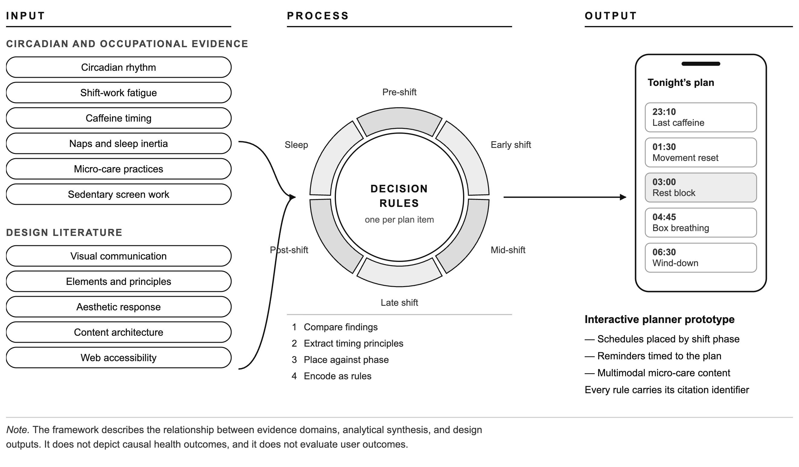

University of the Philippines
Open University
Bachelor of Arts in Multimedia Studies
Gabrella C. Ang
Interactive Planner: Circadian-Aware Planner for Night-Shift Workers: Timing Caffeine, Naps, and Micro-Care
Thesis Adviser:
Benigno Jr. Agapito
Faculty of Information and Communication Studies
24 August 2026
Permission of the classification of this academic work access is subject to the provisions of applicable laws, the provisions of the UP IPR policy and any contractual obligations:
Invention (I) Yes or No
Publication (P) Yes or No
Confidential (C) Yes or No
Free (F) Yes or No
Student's signature
Thesis adviser's signature
Interactive Planner: Circadian-Aware Planner for Night-Shift Workers: Timing Caffeine, Naps, and Micro-Care
"I hereby grant the University of the Philippines a non-exclusive, worldwide, royalty-free license to reproduce, publish and publicly distribute copies of this Academic Work in whatever form subject to the provisions of applicable laws, the provisions of the UP IPR policy and any contractual obligations, as well as more specific permission marking on the Title Page."
"I specifically allow the University to:
Signature over Student Name and Date
This paper prepared by Gabrella C. Ang with the title: "Interactive Planner: Circadian-Aware Planner for Night-Shift Workers: Timing Caffeine, Naps, and Micro-Care" is hereby accepted by the Faculty of Information and Communication Studies, UP Open University, in partial fulfillment of the requirements for the degree Bachelor of Arts in Multimedia Studies.
Benigno Jr. Agapito
Adviser (Date)
Name
Program Chair (Date)
Name
Dean, Faculty of Information and Communication Studies (Date)
Gabrella C. Ang is based in Taguig, Metro Manila. She completed her Bachelor of Arts in Multimedia Studies at the University of the Philippines Open University in 2026, taking the degree alongside full-time work.
She entered the business process outsourcing industry in 2018 and has worked the night shift ever since. Four of those years were spent at a contact centre in Rizal, where she began as a sales and care representative handling billing, technical, and sales support, moved into process and quality analysis auditing calls and reporting on agent and customer behaviour, and then into curriculum development, designing e-learning courses in Articulate Storyline 360 using the ADDIE model and Bloom’s taxonomy. She then moved into remote operations work for United States–based companies as account manager, bid specialist, and executive assistant, and is at present an Operations Manager for a United States–based law firm, still working nights. She leads a team of thirty-five, about fifteen of whom are on the night shift, which makes her responsible for other people’s shift health and not only her own.
This study came out of that schedule. Across those eight years she developed progressive hair loss and an insomnia that did not lift on rest days, and the advice she found when she went looking for it was written for people who sleep at night. None of it told her when in a shift to stop drinking coffee, or where in a shift a nap would help rather than leave her worse. Designing e-learning had already taught her to build the thing rather than describe it, and this paper is that habit turned on her own shift: a working planner instead of a proposal for one.
I thank my adviser, Benigno Jr. Agapito, who advised this special project from proposal to submission.
I thank the teams I have worked nights with across eight years in the industry, and the fifteen people on my current night shift whose schedules I am answerable for. Their nights, and their complaints about them, are the reason this study exists at all: the questions this planner tries to answer are the ones they asked first.
Any error that remains is mine.
Title Page
University Permission Page
Acceptance Page
Biographical Sketch
Acknowledgement
Table of Contents
List of Tables
List of Figures
List of Appendices
Abstract
I. INTRODUCTION
Rationale
Statement of the Problem
Objectives of the Study
Significance of the Study
Scope and Limitations of the Study
II. REVIEW OF RELATED LITERATURE
Health Risks
Comparison with Day Shift Office Workers
Caffeine Use and Circadian Timing in Night-Shift Work
Napping Strategies and Sleep Inertia Among Night-Shift Workers
Micro-Care Interventions: Breathing, Movement, and Short Recovery Practices
Theoretical Framework
Design Foundations of the Planner Interface
Conceptual Framework
Application to the Prototype's Support Screens
Operational Definition of Terms
Hypotheses
III. METHODOLOGY
Research Design
Software Development Life Cycle
Research Methodology
Requirements Specification
Software Design
Accessibility as a Design Requirement
Verification and Validation
Locale of the Study
Respondents of the Study
Sampling Procedure
Data Gathering Procedure
Research Instrument
Data Analysis
Limitations of the Assessment Approach
Ethical Considerations
IV. RESULTS AND DISCUSSION
Profile of the Assessed Build
Rubric Results by Domain
Criterion-Level Results and Evidence
Verification Results
Discussion
V. SUMMARY, CONCLUSION, AND RECOMMENDATIONS
Summary
Conclusion
Recommendations
REFERENCES
APPENDICES
Table 1 Non-Functional Requirements of the Prototype and Their Implementation
Table 2 Outstanding Accessibility Findings Against WCAG 2.2 Level AA
Table 3 Domains of the Multimedia Design Rubric and Their Sources
Table 4 Scoring Bands of the Rubric
Table 5 Domain-Level Rubric Results for the Assessed Build
Table 6 Criterion-Level Scores and the Evidence Each Rests On
Table 7 Results of the Traceability Check on the Generated Plan
Table 8 Automated Verification Coverage by Module
Table 9 Provenance and Licensing of the Prototype's Audio
Figure 1 Diagram of the Conceptual Framework of the Study
Figure 2 Domain Scores of the Assessed Build Against the Rubric Maximum
Appendix A Multimedia Design Rubric: Criteria and Band Descriptors
Appendix B Scoring Evidence Record
Night-shift work in sedentary, screen-intensive occupations is associated with metabolic, psychological, and cognitive harm, and the countermeasures the literature supports (caffeine restriction, planned napping, and brief recovery practices) are reported as general advice rather than timing rules a worker can act on during a shift. This study synthesizes peer-reviewed evidence on circadian disruption, caffeine timing, napping, and micro-care into decision rules, and translates them into an interactive, circadian-aware planner as a client-side prototype whose four nightly-use screens are assessed. The study is qualitative and design-oriented. It collects no end-user data and consults no expert panel; the prototype is assessed by automated verification and by an analytic rubric adapting the Mobile App Rating Scale's domain structure to twenty criteria in five domains. Each criterion is derived from a cited source and scored on a four-band scale whose highest band requires confirmation by measurement, automated test, or a standard's success criterion. The build scored 53 of 60; thirteen criteria reached the top band and none fell below the second. Every generated plan item carries at least one citation identifier, which for ten of the twenty-five rules is an explicit marker recording that the rule rests on design judgment rather than on a study, and 285 assertions pass across twenty-two modules. The remaining shortfalls lie in properties not yet measured and in two features not yet built.
Keywords: circadian rhythm, night-shift work, multimedia design, interactive planner, design rubric, web accessibility
After eight years of working night shift, four of them at a call center, I experienced troubling health changes including hair thinning, insomnia, elevated cortisol levels, and weakened immunity. This personal experience mirrors a growing trend in today's labor force. The global demand for night-shift workers has increased because of the rise of 24-hour economies driven by globalization, digital connectivity, and the expansion of industries such as Business Process Outsourcing (BPO), healthcare, and information technology (IT). Many businesses and corporations began operating across multiple time zones, which increased the need for more employees to work during the night (Lartey, 2024).
A significant number of these night-shift occupations are sedentary, with excessive screen time and minimal physical activity. This combination can pose serious health risks, one of which is chronodisruption caused by misalignments of the circadian rhythm due to irregular sleep-wake cycles (Baron & Reid, 2015). The long-term cost of that disruption is visible in outcome data: among 189,158 women followed for 24 years, longer duration of rotating night shift work was associated with a statistically significant, though small in absolute terms, increase in coronary heart disease risk (Vetter et al., 2016). Prolonged exposure to artificial light and digital screens at night may also aggravate these effects by disrupting hormonal regulation and reducing sleep quality (Silvani et al., 2022).
Various research studies suggest different approaches to tackle the problem of night-shift work. These include caffeine restrictions, naps, and short breaks for recovery. However, the interventions given are often too broad and do not give clear indications about the optimal timing within the night shift for each intervention. Furthermore, night-shift employees generally have to make quick decisions while fatigued and are therefore unable to apply circadian rules consistently to their daily schedules. This indicates the need for tools that convert circadian science into practical, real-time guidance.
With these considerations in mind, this study proposes the development of an interactive, circadian-aware planner application designed to support night-shift workers in timing caffeine intake, naps, and micro-care practices. Moreover, the study seeks to bridge the gap between theoretical knowledge and practical, day-to-day decision-making by synthesizing existing scientific literature into a timing-based, interactive planning framework.
The health risks associated with night-shift work and sedentary activity have been thoroughly studied and documented in research reports. Those same reports, however, often treat the suggested interventions of caffeine regulation, napping, and recovery practices as separate behaviors rather than as connected strategies governed by circadian timing. There is little guidance on the best timing of these interventions during the different phases of a night shift. Furthermore, few studies examine the use of interactive or planning-based digital tools that translate circadian science into practical decision support for night-shift workers operating in multimedia-intensive environments.
The objective of this study is to collect scientific knowledge to guide the development of a user-friendly and circadian-aware planner for night-shift workers. Specifically, it aims to:
The significance of this research aligns with a public health problem that has hardly been addressed in the existing literature: the dual health hazards posed by sedentary work and night-shift occupations. With industries such as BPO, healthcare, and IT actively expanding around-the-clock operations, a comprehensive understanding of the long-term effects on workers becomes vital.
This study fills an important gap at the intersection of occupational health, circadian science, and multimedia system design. By considering the implementation of timing-based interventions as its main approach, this study offers a practical angle to the literature rather than just documenting health risks.
The findings of this study will be beneficial to different groups. Healthcare providers may use the findings to formulate preventive care programs and targeted health education for shift workers, including behavioral timing strategies. Employers and human resources staff may draw on the findings to create healthier work environments. Authorities may use the research to inform their guidelines on occupational health. The study also offers designers and developers an evidence-informed foundation that can support the development of circadian-aware digital tools within health-related application design. Finally, it will make affected workers aware of the dangers they face and of the interventions that can safeguard their long-term health.
This study is limited to the review and synthesis of literature related to sedentary night-shift work, circadian disruption, caffeine use, napping strategies, and micro-care interventions in multimedia-intensive work environments, together with the design literature governing how such guidance is presented. That evidence base is predominantly peer-reviewed and is not exclusively so, and the exceptions are identified here rather than left for a reader to find. Three classes of source sit outside the peer-reviewed literature: unpublished course materials of the program in which this study was written, which carry much of the design and software-engineering argument of Chapters II and III; the published standards of the World Wide Web Consortium; and two items outside the scholarly literature altogether, a practitioner guidance page cited for caffeine-timing practice and a repository posting cited for the growth of twenty-four-hour economies. No timing rule the prototype implements rests on a source in the third class: every citation identifier the rule set carries resolves to a peer-reviewed study. The primary output of the study is an interactive, circadian-aware planner application developed as a research-informed prototype.
The build assessed by this study is a client-side prototype, of which four screens carry the recurring nightly use the rubric was written to evaluate and are the ones assessed: a dashboard reporting the night's pattern, a plan screen carrying the timed recommendations, a reflection screen for post-shift logging and review, and a care screen holding the guided micro-care activities. Beyond these four the prototype implements a first-run sequence, namely the welcome, disclaimer, onboarding, generating, and recommendation screens followed by a guided tour, a plan-review screen reached from the profile, and five overlays that open over an assessed screen: the profile sheet, the time-edit sheet, the plan-adjust sheet, the quick-log sheet, and the micro-care activity player. None of these carries the standalone nightly use the rubric was written to evaluate, so all fall outside its assessed scope. Chapter IV and Appendix B report separately the accessibility measurements taken across ten of them; the generating screen, which is transient, and the plan-review screen are not measured. All records are held on the device. Any feature named in this study as specified but not implemented is identified as such at the point where it is discussed.
The prototype is assessed in two stages, and only the first falls within the period this report covers. Verification, which asks whether the artifact was built correctly, is complete: automated tests cover the scheduling, statistics, time-arithmetic, storage, focus, and color-token modules, and a traceability check confirms that every generated plan item either names the evidence behind it or records that it rests on design judgment. Validation, which asks whether the right artifact was built, begins with the analytic rubric that the researcher applies to the build and reports in Chapter IV, and continues with expert review by specialists in occupational health, sleep science, human-computer interaction, or digital health design, who will be asked for their views on the soundness of the concept, the usability of the application, and the fit between its features and current scientific evidence. That expert review has not been conducted, and Chapter V records it as the final recommendation. No stage of the assessment involves end-user testing, surveys, interviews, or experimental trials with night-shift workers.
Consequently, this study provides no information about the application's effectiveness in improving health or changing behavior. Individual differences in circadian cycles and workplace conditions are not fully accounted for. The study does not create or evaluate medical treatments; it converts existing scientific knowledge into a structured, interactive planning tool.
Night shift work has been widely associated with adverse physical health outcomes. Research consistently indicates higher risks of metabolic syndrome, diabetes, obesity, and hypertension among night shift workers. An umbrella review conducted by Boini et al. (2022) found an excess risk of about 10% for diabetes among shift workers, an excess risk of being overweight of about 25% for shift workers overall that reached 38% among night-shift workers, an increased risk of obesity of 5% for night-shift workers and 18% for rotating shift workers, and an excess risk of hypertension of about 30% where night periods were included in the schedule. These conditions are not explained by the umbrella review itself, which reports risk rather than mechanism. The mechanism the reviewed literature supports is chronodisruption: light at night suppresses melatonin and shifts circadian phase (Cho et al., 2015), and the resulting misalignment between internal timing and the imposed schedule carries sleep, metabolic, and cardiovascular risk with it (Baron & Reid, 2015).
The psychological implications of sedentary night shift work are substantial. Shift Work Sleep Disorder (SWSD) is estimated by the International Classification of Sleep Disorders to be found in 2–5% of workers (Boivin & Boudreau, 2014), and its consequences run well beyond its prevalence: workers who meet its criteria show significantly higher rates of ulcers, sleepiness-related accidents, absenteeism, depression, and missed family and social activities than shift workers who do not meet them (Drake et al., 2004). The social cost is part of that same finding rather than a separate claim: missed family and social activities and depression are among the outcomes on which workers meeting the disorder's criteria differ from shift workers who do not (Drake et al., 2004). The cognitive effects of night shift work are equally concerning. A meta-analysis of eighteen observational studies covering 18,802 participants found that shift workers perform significantly worse than non-shift workers across five cognitive functions: cognitive control (g = 0.86), working memory (g = 0.28), psychomotor vigilance (g = 0.21), visual attention (g = 0.19), and processing speed (g = 0.16) (Vlasak et al., 2022). These are the capacities that reading a plan and acting on it draw upon. The deficit is not constant across a run of nights either: Folkard and Tucker (2003) report that "safety declines over successive night shifts, with increasing hours on duty and between successive rest breaks" (p. 95).
Comparative studies have consistently shown distinct health disparities between sedentary night shift and day shift office workers. The umbrella review above records those disparities as excess risk relative to day workers across overweight, obesity, diabetes, and hypertension, and not as differences in hormonal or immune markers, which it does not report (Boini et al., 2022).
Beyond those risk ratios, the corpus assembled for this study holds no controlled comparison of day-shift and night-shift office workers on sleep quality or life satisfaction, and none is advanced here. What the corpus does support is the direction of the mechanism: day work leaves the sleep-wake cycle aligned with the circadian system, and it is the misalignment rather than the hours themselves that the reviewed evidence ties to the outcomes above (Baron & Reid, 2015; Boivin & Boudreau, 2014).
Caffeine has been reported to be one of the most effective methods for managing fatigue among night-shift workers, mainly because of its ability to temporarily block sleep and increase alertness. This is the main reason why caffeine is so popular among workers who have to stay awake for long hours at night. In a double-blind protocol with thirty healthy adults undergoing nighttime sleep deprivation, a single 2.9 mg/kg dose, roughly 200 mg for a 70-kg adult, significantly increased subjective alertness and clear-headedness (McHill et al., 2014), which matters in occupational groups where safety and screen use are major concerns.
Though caffeine shares some benefits with sleep, its effect on the body is completely opposite, as it does not correct the down-mapped body cycle or reset the biological clock. Caffeine acts as a stimulant and not as a circadian regulator, and so cannot compensate for the chronodisruption that night-shift work brings with it (McHill et al., 2014). Night-shift workers are accordingly advised to time their intake, taking small doses early in the shift and none close to their planned sleep, in order to limit the disruption to that sleep (Lockley, n.d.).
Furthermore, the experimental evidence indicates that caffeine could directly act on the circadian clock. Burke et al. (2015) showed that evening caffeine intake could cause melatonin to be secreted later, thus having a phase-delaying effect on the circadian rhythm. This implies that mistimed caffeine consumption could worsen circadian disruption by postponing the biological night, hence reducing post-shift sleep quality. Additionally, other researchers have claimed that caffeine taken during circadian misalignment can lead to longer time to sleep, less deep sleep, and worse sleep structure even if working at night (McHill et al., 2014).
When all the studies are considered together, it can be said that caffeine is a good short-term alertness booster for night-shift workers if used correctly, but its advantages are strongly based on the timing concerning the circadian phase and sleep intention. Yet, the majority of the studies give general recommendations rather than specific timing guidance that corresponds to different parts of a night shift. This gap emphasizes the importance of having circadian-aware planning tools that convert scientific knowledge about caffeine timing into everyday practical decision support for night-shift workers.
Napping has been widely explored as a countermeasure to fatigue and sleepiness in night-shift work, particularly among professions with extended work hours such as nursing. Planned nap strategies are considered effective in mitigating nocturnal sleepiness and performance deficits, despite the transient effect of sleep inertia immediately following awakening (Ruggiero & Redeker, 2014). A systematic review of experimental and quasi-experimental studies found that night-shift napping often reduces subjective sleepiness and improves sleep-related performance during shift hours, although the magnitude of benefit varies according to nap timing and duration (Ruggiero & Redeker, 2014).
An implementation project among hospital nurses demonstrated that when organizational and managerial barriers to napping were reduced, napping during night shifts was feasible and associated with reduced workplace sleepiness and less drowsy driving after work. In this study, nurses reported that most naps resulted in light or deep sleep, and sleep inertia was infrequent, suggesting that naps of moderate duration can be integrated into night-shift schedules without significantly compromising immediate post-nap performance (Geiger-Brown et al., 2016).
Experimental research on simulated night work further clarifies the relationship between nap timing, duration, and sleep inertia. In controlled laboratory settings, night workers who took two distinct naps during extended night work experienced notable improvements in fatigue and performance in the early morning, despite evidence of sleep inertia immediately after awakening. Performance measures such as vigilance and cognitive testing were superior in nap conditions compared to no-nap conditions, and naps scheduled closer to the early morning period appeared particularly effective in sustaining alertness later in the shift (Oriyama & Miyakoshi, 2018).
Most importantly, the research indicates that sleep inertia (grogginess and disorientation upon awakening) was experienced immediately after naps but eventually reduced, showing that controlling for duration and timing may minimize sleep inertia's negative effects (Oriyama & Miyakoshi, 2018).
The same pilot bears on timing and not on duration alone. Whether a nap falls at night or in the early morning shapes how far sleep state and performance are sustained afterwards, so nap timings are not interchangeable and scheduling against the circadian low raises the benefit, which is the insight that matters most directly to a planning tool for night-shift workers (Oriyama & Miyakoshi, 2018). The three findings above come from a single pilot study of simulated sixteen-hour night work, and the weight placed on nap timing in this study rests on that one source together with the two reviews cited above rather than on independent replications.
All these studies together highlight the complexity of napping strategies in night-shift scenarios. Although naps provide benefits in alertness and performance, the issue of sleep inertia, which momentarily hinders cognitive function after awakening, exists, hence the need for careful consideration of nap timing and duration to derive maximum benefits. The literature advocates the necessity of evidence-based, circadian-aware recommendations instead of universal napping tips, particularly when incorporated into tools like interactive planner applications that are intended to help night-shift workers manage their schedules and alertness throughout their shifts.
Micro-care interventions are understood as the brief, structured activities which are mainly meant to promote the body's physiological recovery, lessen fatigue, and ultimately enhance the performance of functions during long tiring work interruptions. These interventions are of great significance to night-shift workers as their bodies get out of sync with the day-night cycle, they have to undergo heavy mental tasks, and they are sedentary for long periods.
Short recovery practices, commonly known as micro-breaks, are intended to lessen the cumulative effects of fatigue without interrupting the flow of work. A systematic review and meta-analysis of twenty-two samples covering 2,335 participants found that micro-breaks reliably raised vigor (d = 0.36) and reduced fatigue (d = 0.35). The effect on task performance was not significant overall (d = 0.16), but it grew with the length of the break and varied by task, reaching d = 0.56 for clerical work and d = 0.38 for creative work while showing no benefit for cognitively demanding tasks (Albulescu et al., 2022). Two points follow for a night-shift planner. The well-being benefit is the dependable one, and it is the benefit this study claims; and because the performance effect grows with break length, an activity of one to four minutes should be read as the lower bound of what the evidence supports rather than as an optimum.
Similarly, Tucker (2003) reviewed rest breaks as a means of tackling occupational fatigue and concluded that regular breaks can be an effective way of maintaining performance, managing fatigue, and controlling the accumulation of risk over prolonged task performance, and that scheduling additional micro-breaks is beneficial under at least some circumstances. That review does not extend to posture or to prolonged sitting. The sitting half of the case rests instead on the sedentary behavior evidence, which finds that sitting for prolonged periods compromises metabolic health even in adults who meet physical activity guidelines, and that breaking up sedentary time is itself beneficially associated with waist circumference, body mass index, triglycerides, and plasma glucose (Owen et al., 2010).
Although there is a mounting body of evidence that supports micro-care practices, the current research barely describes the timing of these interventions during the different phases of a night shift or their coordination with other fatigue-management strategies like caffeine consumption and napping. The absence of timing-specific guidance restricts the practical use of micro-care strategies and emphasizes the necessity for circadian-aware planning tools which are capable of translating evidence into practical, phase-based recommendations for night-shift workers.
Examining the health effects of sedentary night shift work requires the use of theories, as they are essential in providing a structured lens for understanding the mechanisms underlying its impact on the body and mind. Theories explain the answers as to how disruptions in natural circadian rhythms, combined with occupational and lifestyle factors, can result in long-term adverse health effects. With this, the study gains both scientific depth and a coherent foundation for interpretation of findings. This framework is anchored in multidisciplinary perspectives that include occupational psychology, biology, sedentary behavior research, and environmental health. Together, these perspectives establish a comprehensive theoretical basis that connects night shift work, sedentary lifestyle, and health outcomes in a unified framework.
The Demand-Control Model (DCM), originally formulated by Karasek and taken here from the account and test of it given by De Jonge et al. (2000), holds from the perspective of occupational psychology that employees who are under high job demands but have little control over their tasks are more likely to suffer adverse health outcomes in some form, such as job strain, fatigue, or psychosomatic illness. Sedentary night shift work often puts an employee under high cognitive and performance demands, such as constant monitoring or a repetitive routine in clerical tasks, while leaving little control over pace, break timing, or task order. That pairing of high demand with low control is the quadrant the model identifies as harmful, and an imbalanced demand-control relationship tends to amplify the stress response, which later evolves into either psychological or physical health problems.
The Circadian Rhythm Theory, from the biological perspective, explains how night shift work disrupts the internal biological clock of the body. Circadian rhythms regulate important physiological processes such as sleep-wake cycles, hormone secretion, and metabolic activities. Night work functions against these natural rhythms, causing what is referred to as chronodisruption, which has been consistently correlated with an increased risk of sleep disorders, obesity, cardiovascular diseases, and diabetes (Baron & Reid, 2015). By disrupting the synchronization between internal biological timing and external work schedules, sedentary night shift work impairs recovery from work and long-term health.
Moreover, another critical perspective is the Sedentary Work Hypothesis, which emphasizes the hazards posed by prolonged inactivity. Prolonged sitting, a characteristic feature of night shifts such as call center operations or monitoring jobs, has been linked to metabolic dysfunctions, cardiovascular diseases, and musculoskeletal stresses (Owen et al., 2010). Unlike workers in physically active occupations, sedentary night shift workers bear the risks of inactivity on a background of disrupted circadian rhythms that further amplify the negative effects.
Lastly, the Artificial Light Theory describes how exposure to artificial light at night intensifies health risks. Cho et al. (2015) report that bright or blue-spectrum light at night inhibits melatonin secretion, delays sleep onset, and shifts circadian rhythms, degrading sleep quality. Prolonged use of monitors and exposure to artificial lighting contribute to the nocturnal lifestyle of night shift workers by making them susceptible to insomnia, chronic fatigue, and metabolic imbalance, thereby making artificial light a major environmental risk factor for their health.
The literature reviewed thus far establishes what a circadian-aware planner should recommend and when it should recommend it. It does not establish how those recommendations should be presented. This distinction matters because the intervention proposed by this study is not a set of guidelines but an artifact that a fatigued worker must operate at three o'clock in the morning; the evidence base determines the content of the recommendation, while design determines whether the recommendation is received at all. Software engineering literature states the point plainly: "a highly-efficient system might still not be accepted if the interface is rejected by the users" (University of the Philippines Open University, 2023c). Accordingly, this section reviews the design principles that govern how timing-based guidance is presented in an interface.
Goli-Cruz (2023b) identifies five factors that determine whether a visual communication material succeeds with its intended audience: relevance, clarity, visual appeal, inclusivity, and language. Relevance is a matter of perceived personal consequence, since "we tend to give more attention to messages/information that we think can impact our lives," while clarity is constrained by the medium, because "there is limited time (for video) and space (for static visual material)," so that "the message should be concise and direct to the point" (Goli-Cruz, 2023b).
Three of these factors carry direct consequences for a night-shift planner. Relevance implies that a plan which does not visibly respond to the user's own reported state will be read as generic advice and disregarded. Clarity implies that guidance competing with an active work task must be short enough to absorb during a break, not something that has to be studied. Inclusivity, defined as attention to "the diverse needs, perspectives, experiences, and characteristics of the audience" (Goli-Cruz, 2023b), covers more than accessibility compliance. Night-shift populations vary in shift length, break autonomy, and commute mode, and this study addresses that variation through user-adjustable planning parameters rather than a single fixed schedule.
The elements and principles of design provide the terms for describing the resulting layout. Goli-Cruz (2023a) identifies the elements as "color, typography, line, space, shape, texture, and depth" and the principles as "balance, contrast, emphasis, hierarchy, movement, pattern, proportion, repetition, and unity," noting that the principles "provide a framework for organizing and arranging the elements in a harmonious and pleasing composition." Three principles carry the weight of the planner's timeline view: hierarchy, which distinguishes an item's title from its rationale; contrast, which separates one intervention domain from another; and proximity, which groups items belonging to the same phase of the shift.
Goli-Cruz (2023a) further observes that "visual codes are important aspects of visual design as they can convey meanings that are culturally bound," and that "knowing your audience is an important consideration when developing your graphic design." Since the target population of this study is composed largely of Filipino business process outsourcing workers, the study treats color semantics and iconography as culturally specific rather than universal, and identifies this as a matter for expert review rather than one settled by the researcher.
The decision to make the interface calm, low-contrast, and visually restrained rather than gamified needs more justification than preference. Heinrich (2013) argues that aesthetic response is an evolved adaptation to environment rather than an arbitrary product of culture, concluding that "if aesthetic tastes refer to adaptive responses to living in a certain environment, then this suggests that we should make efforts to retain and create environments that we find beautiful and pleasing because our well-being depends on it" (p. 752). This study extends that claim to the digital environment: for a worker whose physical setting is already misaligned with their biology, an interface that adds visual noise compounds the misalignment, while one that reduces it offers a small correction.
Heinrich (2013) also notes that "the aesthetic environment includes not only our visual cues but also an aural landscape" (p. 752). This observation is taken as the basis for an audio variant of the planner's breathing guidance, for reasons separate from the cognitive-load argument made in Chapter III. The build assessed by this study delivers that guidance in both channels. The step instruction is spoken through the platform's own speech synthesis and each step boundary is marked by a synthesised tone, both under a control in the player's header that silences them without stopping the exercise. On novelty, Heinrich cautions that although "the 'new' catches our eye and so variety and complexity as such may be aesthetic," there are "discrete limits to the novel that are beautiful," since "making something ugly is not innovation" (p. 755), a constraint this study reads as an argument against decoration in an interface used under fatigue.
Dutton (2005) reports cross-cultural evidence relevant to palette selection, noting, alongside consistent preferences for water, vegetation, and open landscape, the outcome of a ten-country survey of art preferences: "Blue turned out to be the favourite colour worldwide, with green in second place" (p. 698). The planner's color assignments for hydration and movement follow this pattern. Dutton is equally clear about the limits of such reasoning. He distinguishes Kant's category of the agreeable, "the straightforward subjective sensations of things that we like in direct experience: the taste of sweet, for example, or the colour blue," from the beautiful, and observes that a theory of inherited landscape preference offers little help in explaining "what distinguishes a popular calendar landscape from a great landscape painting" (p. 703). Evolutionary accounts are therefore used in this study to justify broad choices such as palette and visual calm, and not to settle finer choices of composition, which were guided instead by the design principles above.
Because the planner delivers guidance in several forms (timed text instruction, a guided breathing animation, timeline entries, and summary readings derived from logged events), and because further forms are anticipated, how that content is represented is itself a design question. DeRose et al. (1990) argue that a document is properly modeled as "an ordered hierarchy of content objects," in which each object carries a semantic type rather than formatting instructions, since an object's "appearance is superficial and transient rather than essential." They observe that systems storing appearance rather than structure cannot answer natural questions about their own content, "because there is no explicit indication of what part of the text is poetry," and that a hierarchical content model can "integrate a wide variety of different types of data or media into a 'compound document'" (DeRose et al., 1990).
This study adopts that model for its plan items. Each item is stored as a structured object carrying its identifier, scheduled time, intervention category, instruction, and rationale. Its visual treatment is taken from the category when the item is displayed rather than stored with the item. This means that one item definition can be rendered as a timeline entry, a reminder, or an exported record without duplication, and that adding a further rendering, such as an audio reading of an instruction or a video of a movement sequence, is a change to presentation rather than to stored content. That property is what keeps the multimodal commitment stated in Chapter I within reach of the prototype even where a given modality is not yet built. One of the renderings named here is not yet drawn from the model: the reminder rows in the assessed build are a fixed list keyed by intervention category rather than a rendering of the plan items themselves, so freedom from duplication is at present a property of the stored structure rather than of every surface built on it.
This conceptual framework illustrates how scientific evidence is systematically translated into the design of an interactive, circadian-aware planner for night-shift workers. Rather than depicting causal health outcomes, the framework focuses on the relationship between evidence domains, analytical synthesis, and design outputs.
The structure of the framework is adapted rather than composed for the occasion. It follows the design science paradigm in information systems research, which separates behavioral science, whose aim is to explain phenomena, from design science, whose aim is to build and evaluate artifacts that serve a human purpose (Hevner et al., 2004). Work conducted in that paradigm draws on an existing knowledge base of theories and evidence, applies it in constructing an artifact, and is judged by that artifact rather than by a tested relationship between variables; Hevner (2007) separates these movements into a rigor cycle, which grounds the work in existing knowledge, and a design cycle, which builds and evaluates. The three levels below are that structure applied to a circadian-aware planner rather than to an information system: the input level is the knowledge base this study draws on, the process level is the synthesis that converts it into decision rules, and the output level is the artifact those rules generate. The corresponding process model, whose six activities run from problem identification through the definition of objectives, design and development, demonstration, and evaluation to communication, is set out by Peffers et al. (2007), and it is the sequence this report follows across Chapters I, III, and IV.

Figure 1. Diagram of the Conceptual Framework of the Study
The input level of the framework is based on several bodies of literature: circadian rhythm studies, night-shift work and fatigue studies, caffeine timing evidence, napping strategies and micro-care interventions, and research on sedentary, multimedia-intensive work environments. Alongside these sit the design literatures reviewed in the preceding section, which govern presentation: visual communication effectiveness, the elements and principles of design, aesthetic response, content architecture, and web accessibility. Together these references give evidence about the difficulties of night-shift workers, the rules of efficient fatigue management, and the conditions under which guidance is actually received.
The process component represents the analytical role of the researcher. Findings from the literature were reviewed, compared, and synthesized to identify timing-based principles and constraints relevant to night-shift schedules. These principles are organized according to different phases of the night shift and translated into decision rules that guide behavioral recommendations.
At the output level, the framework culminates in the development of a research-informed prototype of an interactive planner application. The application embodies the synthesized evidence through structured schedules, reminders, and multimodal micro-care content. The framework does not evaluate user outcomes but demonstrates a systematic pathway for transforming circadian science into a practical, interactive planning tool.
Of the prototype's four assessed screens, two are treated separately here: the care screen, which presents the micro-care activities, and the reflection screen, which reports the shift back to the user afterwards. The plan screen is the timeline discussed above, and the dashboard renders the readings the statistics module derives from the same logged events the reflection screen collects, so it raises no question the sections above and below do not answer. These two do, and the questions are how a guided activity should be presented, and how what a user reports is connected back to what the plan does next.
The micro-care screen offers five short guided activities (two breathing patterns, two movement sequences, and an eye-rest routine) of one to four minutes each. One is marked as suggested, chosen from the current shift phase and the events already logged rather than by a fixed order. This applies the relevance factor directly: a menu identical on every night would be read as generic advice and disregarded, while a menu whose first recommendation moves with the night the user is actually having is visibly addressed to them (Goli-Cruz, 2023b). The selection routine also accepts a feeling reported by the user, which would narrow the choice further; the screen does not yet pass one, so in the assessed build the suggestion is drawn from phase and logged events alone. The remaining four stay visible and selectable, so the suggestion narrows the choice without removing it. That distinction matters for a population whose autonomy at work is already low, as the Demand-Control Model reviewed earlier in this chapter would predict.
Each activity is played through a single guided view with an interval countdown, the name of the current step, a pause control, and a progress indicator; the activity's intervention domain supplies the accent color, and the icon is carried by the activity itself. Guidance is delivered in two channels. The visual channel is the timed instruction described above. The audio channel, argued for under Aesthetic grounding, speaks the current step through the platform's own speech synthesis and marks each boundary with a short tone; it begins with the activity, carries a control of its own so that it can be silenced without stopping the exercise, and silences the visual live region while it runs so that a screen-reader user is not told the step twice. The movement sequences are still rendered as timed text rather than as video, which remains a limitation of the prototype rather than of the design, since the content model described above allows video without restructuring.
The prototype separates logging into two interfaces on the grounds that they answer different questions under different conditions. During a shift the user is interrupted and the question is what is happening now, so the in-shift interface is reduced to the five events that alter the remainder of the plan, each answered with a single sentence saying what changes. After the shift the user is not interrupted and the question is what happened, so the reflection screen offers the full set of thirteen event types, allows a time to be entered or corrected, and lets any entry be edited or removed. Clarity, in Goli-Cruz's (2023b) sense of a message limited by the time and space available to receive it, therefore depends on the moment rather than on the application, and the two interfaces are two different answers to it.
The screen returns two readings drawn from the entries rather than a bare list: a summary of the night's pattern, and a statement of which plan items changed as a result. This is the relevance factor applied to feedback rather than to content. A user who cannot see that a logged event altered the plan has no evidence that logging is worth the effort, and the study treats that visibility as a functional requirement rather than as reassurance.
A closing set of seven fixed-choice questions records the user's own account of the night: sleep duration, restedness, the period of greatest sleepiness, the effect of caffeine, completion of movement breaks, whether rest was taken, and what the plan should change next shift. Only the last of these may change the stored profile. The rest inform the next plan without overwriting the user's stated characteristics. An answer about what the plan should do next is a preference, while an answer about how rested the user feels is an observation of one night, and treating the second as the first would let a single bad shift rewrite a standing profile. The design principle at work is the one stated in Chapter I under scope, that the planner adjusts timing rather than diagnosing the user; here it takes the form of a limit on which inputs may write to the profile.
The following terms are used in this study with the meanings given here.
Chronodisruption. The misalignment between the body's internal circadian timing and the external schedule imposed by work, and the physiological consequences that follow from it (Baron & Reid, 2015).
Circadian low. The interval of the biological night, taken in this study as 02:00 to 05:00, during which alertness and performance reach their lowest point. The prototype marks this interval on the plan when a shift overlaps it.
Shift phase. A named interval of the working day used to place a recommendation. The literature matrix uses three: pre-shift, mid-shift, and post-shift. The prototype's scheduling module expands these into six, adding early shift, late shift, and sleep.
Micro-care. A brief, structured recovery activity of one to four minutes (controlled breathing, a movement sequence, or an eye-rest routine) performed during a shift without leaving the workplace (Albulescu et al., 2022; Tucker, 2003).
Plan item. The unit of output of the planner: a structured object carrying an identifier, a scheduled time, an intervention category, an instruction, a user-facing rationale, and one or more citation identifiers naming the evidence behind it.
Intervention domain. One of the eight categories by which plan items are classified and rendered: sleep, caffeine, water, movement, light, food, recovery, and shift.
Prototype. The client-side build of four screens assessed by this study, as delimited in Chapter I under scope. Where a feature is specified but not present in that build, the text says so at the point of discussion.
Traceability. The property that each planning rule corresponds to at least one supporting study, established by checking the citation identifiers carried on generated plan items rather than by consulting separately maintained documentation.
Conformance. Satisfaction of the success criteria of the Web Content Accessibility Guidelines 2.2 at Level AA, evaluated over the prototype's implemented screens only (World Wide Web Consortium [W3C], 2023).
Rubric band. One of the four levels of the scoring scale defined in Chapter III and reproduced in Appendix A, ranging from a criterion not met on the assessed build to a criterion met and confirmed by a check independent of the researcher's judgment.
No hypotheses are advanced. The study is qualitative and design-oriented, and its objectives are to synthesize evidence and to translate it into a designed artifact rather than to test a stated relationship between variables. Where the template of this program provides for hypotheses, their place in this study is taken by the timing principles extracted in this chapter, which the prototype is required to implement and which the traceability check in Chapter III confirms it does.
This study uses a qualitative, design-oriented research design to guide the review of scientific literature and the development of a circadian-aware interactive planner for night-shift workers. Qualitative research seeks to understand complex phenomena by examining the context, processes, and relationships of concepts rather than by performing statistical tests.
Named in the terms of the paradigm cited for the conceptual framework in Chapter II, this is a design science study (Hevner et al., 2004). Its consequence for the method is the one a reader of this chapter needs: the study relates no independent and dependent variables, because evaluation in this paradigm is artifact-based rather than variable-based. What is examined instead is whether the design is grounded in an existing knowledge base and whether the artifact demonstrably embodies that grounding, which are the rigor and design cycles of Hevner (2007). The report is organized on the six activities of the process model of Peffers et al. (2007), with problem identification and the definition of objectives in Chapter I, design and development in this chapter, evaluation in Chapter IV, and communication in the report itself. Demonstration, which in that model exercises the artifact on an instance of the problem, is not reported as a stage of its own: the profiles the rubric and the verification suite are run against are that exercise, and they are reported under evaluation rather than separated from it.
Findings on circadian rhythms, caffeine use, napping, and micro-care practices were synthesized to derive timing-based principles, which informed the planner's decision rules and design logic. Evaluation is accordingly artifact-based, and it takes two forms, both reported in Chapter IV: the analytic rubric set out in Appendix A, which was written before the build was scored, and the automated verification suite, which checks that every plan item the prototype generates carries the citation identifier of the evidence behind it. No expert validation was conducted. The rubric's highest band does not require one: it is defined by a check whose outcome is settled by something other than the researcher's opinion of the build, namely a measurement against a published threshold, an automated test, or a documented evaluation against the success criteria of a published standard. Every criterion that reached that band did so on one of those three grounds. The third is the weakest of the three and is marked as such wherever it carries a band: the two conformance evaluations recorded in Chapter IV were conducted by the researcher, so what removes the judgment is the standard supplying the criterion and the report supplying the procedure and the observed result, not the identity of the evaluator. A second rater is what would close that gap, and Chapter V records it as a recommendation. Chapter V records expert review as the study's final recommendation and sets out how the instrument is to be re-administered to obtain a second rater's scores.
Domínguez (2017) characterizes qualitative design-based research as an explicitly interventionist approach, focused on the design of innovations and on the testing of those innovations in naturalistic settings, whose purpose is to examine the practical application of theories in specific, situated contexts rather than to prove the merits of any particular intervention. This study adopts the first half of that characterization and not the second. The planner is designed from the theories the literature supplies and is examined for whether it embodies them; it is not deployed to night-shift workers in the setting where it would be used, so the situated testing that Domínguez treats as constitutive of the approach is absent here. What carries the evaluation instead is the design science paradigm named above, in which an artifact is judged against the knowledge base it is built from rather than against data newly collected from users (Hevner, 2007; Hevner et al., 2004). Stated plainly, this is a design-based study in its design phase only, and the end-user testing that would complete the cycle is set out as a recommendation in Chapter V rather than claimed as work already done.
The prototype was developed under the Prototype Model of the software development life cycle. This model "focuses on developing a prototype version of the project" and "is applicable if the customer does not have yet specific details about the software they want to have," proceeding by presenting an early build for feedback and applying "necessary changes… based on clients' comments and suggestions"; it is characterized as iterative and as adopting "a trial-and-error method between the client and the developer" (University of the Philippines Open University, 2023a).
The model was selected on the grounds the same source gives for model selection generally: "finding the right one greatly depends on the circumstances and factors including but not limited to the scope of the project, size of the team, budget, and client preferences" (University of the Philippines Open University, 2023a). Three circumstances of this study favor the Prototype Model. First, the requirements were derived from literature rather than elicited from a client, so no fixed specification existed at the outset. The questions the researcher's own night-shift colleagues raise about their schedules, acknowledged at the front of this report, informed which of those literature-derived requirements were treated as urgent; they were not collected as data, and no requirement in this study rests on them. Second, the prototype was developed by a single researcher, so the coordination overhead that justifies heavier models does not arise. Third, the Waterfall Model was rejected because its documented disadvantages, that "output is delivered late, severe errors were not detected early" and that it "does not support iterative development" (University of the Philippines Open University, 2023a), are precisely the risks a literature-derived prototype must avoid. A timing rule misread from a study should surface during construction rather than after it.
The same commitment to iteration is supported independently from the design side, where graphic design is described as "an iterative process" in which "before a graphic design is approved, produced, and used, revisions after revisions may happen," and where proceeding directly to production is discouraged "so as not to waste human and non-human resources" (Goli-Cruz, 2023b).
This study uses a qualitative, design-oriented research methodology grounded in the systematic review and synthesis of existing scientific literature. The methodology translates established circadian and occupational health research into the design of an interactive, circadian-aware planner application for night-shift workers. Rather than evaluating health outcomes or user effectiveness, the study focuses on integrating evidence, formulating design logic, and assessing the resulting artifact against a rubric and an automated verification suite.
The study began with a systematic review of peer-reviewed scientific articles on circadian rhythms and night-shift work, caffeine timing, napping strategies, fatigue management, and micro-care interventions such as breathing and mobility practices. Academic databases were searched, and relevant studies were screened for their relevance to sedentary night-shift workers and timing-based behavioral recommendations.
From the selected literature, practical timing principles were extracted, specifically addressing what intervention should be applied, when it should occur, and under what conditions it is most appropriate. These findings were then summarized in a literature matrix organized by the phases of the night shift, namely pre-shift, mid-shift, and post-shift.
The synthesized findings were expressed as decision logic integrated into an interactive planner. The evidence-based recommendations take the form of if-then rules that generate time-dependent suggestions. For example, inputs for sleep duration, shift start time, and reported fatigue are used to produce napping, caffeine restriction, and micro-care recommendations appropriate to the time of the shift.
The decision rules guided the design of application features such as daily check-ins, reminder notifications, structured schedules, and suggested routines. This stage establishes a direct link between scientific evidence and the application's capabilities.
Based on this design logic, the interaction structure of the planner application was set out. Core user flows will include onboarding procedures that collect shift schedules and user goals, daily check-ins that capture sleep, energy levels, and caffeine use, and planner outputs that present personalized timing plans. Of the check-in fields specified here, the assessed build captures sleep, caffeine, meals, rest, and the end of the shift; a check-in on energy level as such is specified and is not among them.
To support varied user needs and reduce cognitive load, multimodal content is specified, including text-based guidance, audio-based breathing exercises, short instructional videos for movement or stretching, and simple visual representations such as timelines or charts. Of these, the build assessed by this study implements text-based guidance, timed visual instruction, audio-based guidance for the breathing and movement activities, and the visual representations, namely the timeline, the day strip, and the summary readings. The audio channel uses the platform's own speech synthesis and a synthesised tone rather than recorded material, so the prototype carries no third-party audio asset and no accompanying licence. The video variant is specified here and in Chapter II as a design direction and is not present in the assessed build.
A functional minimum viable prototype (MVP) was developed to show how the synthesized evidence works in practice. The prototype includes a shift-based scheduling engine, a rule-based recommendation system, a notification and reminder component, and a basic content player for multimodal micro-care materials. Logging will also record recommended actions and completed activities. The scope of the prototype was intentionally limited to essential features and three primary shift phases to maintain methodological focus.
Four of these five components are present in the assessed build: the scheduling engine, the rule-based recommendation system, the content player, and logging, which is extended with entry correction and an export of the stored record, the export writing a JSON file only and carrying no human-readable or printable rendering. The notification and reminder component is not. The prototype composes and displays the reminder schedule but has no means of delivering an alert to a user who is not looking at it, so the component is recorded as specified and unbuilt. The three shift phases of the literature matrix are resolved by the scheduling engine into six named intervals, namely pre-shift, early shift, mid-shift, late shift, post-shift, and sleep. A recommendation whose evidence distinguishes the start of a shift from its final hours cannot be placed against a single mid-shift period.
Requirements were specified in two classes. Functional requirements describe "what the system should do, what functionalities and features are, what are the actions to be performed," while non-functional requirements, also termed quality attributes, describe "the general properties of the system aside from the functionalities" and "provide directions and restrictions to the overall system architecture" (University of the Philippines Open University, 2023b). Table 1 records the non-functional requirements adopted for the prototype and the mechanism through which each is addressed. Only the second of the two classes is tabulated. The functional requirements are not set out as a list anywhere in this report; they are given implicitly by the account of the screens and their behaviour in Chapter II and by the component list under Prototype development above, and that omission is recorded here rather than left for a reader to find.
| Quality attribute | Definition adopted | Implementation mechanism |
|---|---|---|
| Usability | Ease of learning and operating the system from the end-user's perspective, including intuitiveness of controls | Separation of in-shift logging, reduced to the five events that alter the remainder of the plan, from post-shift reflection, where the full thirteen event types and time correction are available |
| Reliability | Ability of the system to perform its task without failure over a period | Automated unit tests over the scheduling, statistics, and time-arithmetic modules |
| Performance | Quality of system response to the end-user, on which user experience depends | Plan generation implemented as a pure function of profile, logs, and current time |
| Security | Assurance that only authorized users access the system and its data | Local-only persistence of sleep, fatigue, and caffeine records; no transmission to a server |
| Availability | System accessible to end-users when required | Client-side operation, so plan access does not depend on connectivity during a shift |
Security warrants specific comment. The prototype records sleep duration, fatigue reports, and caffeine intake, which constitute health information about an identifiable individual even though the study itself collects no data from end-users. The scope of the study excludes deployment, but the specification records local-only storage as a requirement so that any later deployment inherits the constraint instead of revisiting it.
Design proceeded across the four aspects identified in the reference framework, where design is understood as the stage that "link[s] the requirement analysis phase to the actual system implementation" and where, if requirements analysis "answers the question 'what', software design answers 'how'" (University of the Philippines Open University, 2023c). Data design specifies the plan item structure described in Chapter II. Architectural design partitions the system into four modules (time arithmetic, planning rules, statistics, and presentation) on the principle that "overall complexity is the sum of the complexity of each module plus the complexity of the actual integration," and that "complexity represents cost" (University of the Philippines Open University, 2023c). The four name concerns rather than files, and they do not partition the implementation one for one: the prototype is written as fifteen source modules, and four of those that Chapter IV and Appendix B report on separately, namely storage, the colour tokens, focus management, and the audio cues, are treated here as services the four concerns draw on rather than as concerns of their own.
Procedural design is expressed as the rule set that transforms a user profile and event log into a timed plan. The rule set exhibits both patterns the framework describes: it is transform-centered, in that "the input data is then transformed into an output data," and transaction-centered, in that "the input data is evaluated and alternative paths will be selected based on the result of the evaluation" (University of the Philippines Open University, 2023c). The latter accounts for the conditional adjustments through which a logged skipped break, failed nap, or late caffeine dose alters subsequent recommendations. Interface design is treated in Chapter II.
Accessibility is treated in this study as a functional requirement rather than an optional enhancement, following the position that "it is your responsibility to ensure that the digital products you produce are accessible to people of all abilities" (Esteves, 2025). The conventional justification for accessible design rests on permanent disability. This study adds a further justification specific to its population.
Night-shift workers show measurable declines in cognitive control, working memory, psychomotor vigilance, visual attention, and processing speed relative to non-shift workers (Vlasak et al., 2022), and, as Folkard and Tucker (2003) report, "safety declines over successive night shifts, with increasing hours on duty and between successive rest breaks" (p. 95). An interface operated under those conditions faces constraints functionally similar to those that accessibility standards are built to accommodate. Those constraints differ in origin, being situational rather than permanent, but not in kind. Conformance to WCAG 2.2 at Level AA (W3C, 2023) is therefore adopted as a design requirement responding directly to the cognitive profile documented in Chapter II, and not as a secondary compliance activity.
The course from which this requirement is drawn distinguishes universal design, inclusive design, and accessible design. It treats the needs of users whose capacities vary, including aging users, as continuous with the needs of users with disabilities (Esteves, 2025). That continuity is what allows the preceding argument to be made without overstatement. The study does not claim that fatigue constitutes a disability; it claims that a design accommodating varied and fluctuating capacity serves both populations, and that the techniques are the same in either case.
Conformance is organized by the four principles under which the success criteria are grouped: perceivable, operable, understandable, and robust (W3C, 2023). The procedure follows the sequence taught for accessibility auditing, namely a preliminary review of the obvious barriers, followed by a structured conformance evaluation conducted under the Website Accessibility Conformance Evaluation Methodology (WCAG-EM) and recorded in its report format (Esteves, 2025; W3C, 2014). The evaluation is restricted to the prototype's implemented screens, and its scope statement records that restriction explicitly, since a conformance claim covering screens that do not yet exist would be void.
Findings from the audit are recorded here in the state they are in. Three are closed. First, the lowest-emphasis text color in each theme fell below the 4.5:1 ratio required at Level AA for body text, measuring 2.20:1 in the light theme and 3.17:1 in the dark theme against the surfaces those values are printed on. Both were re-specified and now measure 4.65:1 in the warm theme and 4.69:1 in the dark against the worst surface each is printed on, and an automated test asserts every text token against every surface it is used on in both themes so that the palette cannot regress silently. Those two values are also the floor the rendered-pixel measurement reports across the four assessed screens, since the lowest-emphasis token is what sets it. Second, the prototype distinguishes eight intervention domains by hue, and two of those domain colors converge under deuteranopia. Because each domain also carries a distinct icon, color is a redundant channel rather than the only one, and the finding is closed on that ground. Third, the micro-care screen animates a scaling indicator across each timed interval, and a pause control satisfies the criterion governing moving content. The build also honors the operating system's reduced-motion setting, which stops the ambient animation and collapses the transitions.
A fourth finding is recorded because of what it demonstrates about the procedure. The domain hues were specified for icons and fills, where the 3:1 non-text ratio applies, and several were also being used as text color, where 4.5:1 applies; each domain now carries a separate value calibrated for text against the tinted surface it prints on. One instance escaped both the palette review and the automated check: it was a color written directly into a component rather than drawn from the token table. It surfaced only when every rendered text node was measured against the surface behind it in the running application. A conformance evaluation conducted against the source alone would have inherited the same blind spot, which is why the procedure described above is performed against the rendered screens.
Five findings were open when this chapter was first written, three of them Level A failures of the same kind, in which a shared component already implemented the correct behavior and an individual call site did not. All five have since been closed against the build assessed in Chapter IV, and Table 2 records them in that state rather than omitting them, since a finding that is removed from the record cannot be checked. The micro-care activity rows and the reflection log rows are now real buttons; the time-selection controls carry names, and no control rendered anywhere in the application is left without one; the tab bar, the reminder switches, the time-wheel columns, and the disclosure report their state; the screen change is announced through a live region held outside the toast; and the empty-night labels in the day strip meet the 4.5:1 floor. Two qualifications carried by those closures when this chapter was first written have since been discharged. The key presses had not then been delivered by a human, and the state attributes had not been heard in an assistive technology; both were inferred from the elements being correctly constructed. A manual keyboard evaluation and a screen-reader evaluation were conducted on 21 August 2026, each over the four assessed screens and the six modal overlays, the micro-care activity player among them, and each recorded in the report format described above. Neither found a failure. What they add is therefore not a repair but the difference between an element that is correctly built and an experience confirmed to work, and Chapter IV reports both under E2 and E4.
One finding remains open, a question of non-text contrast raised by the same review that closed the five above. A second, the knob of the reminder toggle, was open when this chapter was first written and has since been closed by giving the knob a one-pixel boundary of its own, which clears 3:1 against every domain track in both themes and is no longer reported below the floor by the rendered-pixel measurement.
| Finding | Success criterion | Level |
|---|---|---|
| A chip in its chosen state carries no boundary of its own, presenting a transparent border over a tint that measures as little as 1.15:1 against the surface behind it. Nine such rows were measured across the two themes, covering about six distinct controls: the theme chips, two reminder chips, the plan screen's reset-grouping toggle, and the player's spoken-guidance toggle. Two of the nine are not the shared pill component, so the finding is a class of chosen-state chip rather than one component. It is recorded rather than remediated on the ground that each chip's own label identifies it at 4.5:1 or better and its pressed state is carried to assistive technology and confirmed in the accessibility tree, so an outline on every chosen chip is a change of visual design rather than of conformance. The ground is an argument and not a measurement, which is why the finding is held open | 1.4.11 Non-text Contrast | AA |
One further item is declared rather than claimed. Type sizes in the prototype are fixed, so the platform's text-scaling setting has no effect on them. System and pinch zoom do magnify the interface, but honoring text scaling properly requires a reflow pass over every screen, and it is recorded as a direction rather than a delivered feature.
The conformance position stated in this chapter accordingly rests on three kinds of record: the rendered-pixel contrast and accessible-name measurements reported in Chapter IV and Appendix B, the assertions in the automated suite, and two evaluation reports in the WCAG-EM format, one for keyboard operation and one for screen-reader output, both dated 21 August 2026 and both held in the repository. Two bounds are carried in those reports rather than passed over: one screen reader in one browser is the extent of the assistive-technology coverage, and the spoken wording of the current-page state on the navigation controls was not transcribed, so that one property is confirmed in the accessibility tree and not yet quoted from a voice.
Two implementation decisions are recorded as satisfying the requirement rather than failing it. The selection controls on the reflection screen are native platform controls tied to visible labels, rather than custom widgets assembled from generic elements. Native controls carry keyboard operation, focus behavior, and assistive-technology semantics without extra authoring. That is the robustness principle applied at the level of implementation rather than of visual design, and it is why the reflection screen was rebuilt around them. The six unlabeled time controls that this chapter first recorded as a Level A failure are native selects of the same kind, written before that component existed. They remain outside it: each now carries an accessible name of its own, and the row each belongs to is marked as a group and named as a whole, so the failure is closed by naming the existing call sites rather than by consolidating them onto the shared control. The audio guidance added to the micro-care player is a third. It begins with the activity, which the criterion governing automatically playing audio permits so long as a mechanism to stop the sound is available; that mechanism is a control of its own in the player's header, separate from the sequence pause, so the sound can be silenced without ending the exercise. When it is on, the visual live region that would otherwise announce each step is silenced, so a screen-reader user is not told the step twice. One consequence is recorded rather than hidden: because the guidance speaks by default, a user already running a screen reader hears two voices until the control is used, which is the reason the control sits in the header rather than behind a settings screen. Separately, every overlay in the prototype shares one focus-management routine that moves focus in on opening, holds it while the overlay is open, closes on the escape key, and returns focus to the control that opened it. Each overlay is marked as a modal dialog, so assistive technology does not read the covered screen beneath it.
To preserve the archival nature of the study, assessment is conducted without collecting primary data from end users. Within that constraint, this study distinguishes verification from validation following Boehm, where verification asks "are we building the product right?" and validation asks "are we building the right product?" The latter is necessary because "there are times when the specification requirements do not represent the real needs of the customers" (University of the Philippines Open University, 2023d). The distinction reorganizes the study's assessment activities into two groups.
Verification comprises two procedures. Automated unit tests exercise the scheduling, statistics, and time-arithmetic modules, together with storage, focus management, the color tokens, and the onboarding, reminder, tour, and import checks. Unit testing is the strategy that "focuses on checking if the unit of code (smallest testable part) is fit to use" and is "done by the developer itself" (University of the Philippines Open University, 2023d). The traceability check confirms that each planning rule either cites at least one supporting study or carries an explicit marker recording that it rests on design judgment. It runs against citation identifiers recorded on each generated plan item alongside its user-facing rationale, so that the check is executed against the running system rather than against separately maintained documentation. Rules resting on design judgment rather than on evidence carry an explicit marker to that effect, so that the absence of a citation is a recorded state rather than an omission. The check reaches the generated plan items and nothing else. The five micro-care activities carry no citation identifier of their own and stand outside it, so the traceability result reported in Chapter IV covers the plan rather than the whole of the content the prototype delivers.
Validation has two parts. The first is the researcher's application of the rubric described below, reported in Chapter IV. The second is expert heuristic review and scenario-based testing, neither of which had been carried out when this report was prepared. Heuristic evaluation is adopted as an established interface assessment method in multimedia practice, taught alongside usability testing as a means to "evaluate a user interface using heuristics and usability tests" and to "create user interfaces based on heuristic and human-centered principles" (Clariño, 2024). It is used here because the prototype's scope excludes end-user trials, and it is not offered as equivalent to them. Were that review conducted, scenario-based testing would use hypothetical user cases to confirm that the planner's outputs are consistent with the synthesized timing rules.
The evaluation instrument is the rubric specified under Research Instrument below, applied by the reviewer to the same criteria and bands the researcher used, so that the two sets of scores are comparable. Its written-commentary section adapts the criteria of an established design-analysis rubric, namely context and purpose, a list of the visual elements and design principles applied or violated, an assessment of effectiveness against the intended purpose, and recommendations for improvement (Goli-Cruz, 2023c). The band scores are reported criterion by criterion rather than as a single figure of merit, and the divergence between the reviewer's bands and the researcher's is reported as a result in its own right.
The study has no field locale. Its evidence base is the literature delimited in Chapter I under scope, retrieved from academic databases and, for the course materials named there, from the program's own course sites, and its artifact is a client-side application developed and assessed by the researcher. The population the artifact addresses, sedentary night-shift workers in business process outsourcing, healthcare, and information technology, is described in Chapter I and is not sampled here. No expert validation was conducted, so the study has no correspondence with specialists to report.
The study has no respondents. No survey, interview, experiment, or direct participation by night-shift workers was conducted, and no subject-matter expert was consulted. Expert review by specialists in sleep science, occupational health, digital health design, or human-computer interaction was planned as the second part of validation described above; it was not carried out within the period this report covers, and Chapter V records it as the study's final recommendation.
Were that review conducted, the reviewers' role would be limited to evaluating the conceptual framework, design logic, and alignment of application features with existing scientific evidence. Their input would assess the credibility and coherence of the prototype rather than generate empirical data. No stage of this study as reported collects data from a human participant.
No sampling of human participants is performed. One selection procedure operates in its place: literature is selected purposively against the criteria stated under Data Gathering Procedure, namely relevance to night-shift work, circadian disruption, fatigue management, caffeine timing, napping, micro-care, and sedentary or multimedia-intensive work. No expert was selected, because no expert review was conducted. Had it proceeded, reviewers would have been selected purposively on the criterion of demonstrable expertise in sleep science, occupational health, digital health design, or human-computer interaction, their number determined by availability rather than by a target sample size, and no inference to a population would be drawn from their judgments.
Data are gathered by searching academic databases. Selection criteria include relevance to night-shift work, circadian disruption, fatigue management, caffeine timing, napping strategies, micro-care interventions, and sedentary or multimedia-intensive work environments.
Once selected, studies are examined to extract key findings related to behavioral timing, contextual conditions, and recommended interventions. Extracted information is organized according to intervention type and phase of the night shift, namely pre-shift, mid-shift, and post-shift. This organization allows comparative analysis and supports the synthesis of timing-based principles.
The primary research instruments in this study are literature extraction matrices and document analysis, both developed by the researcher. These tools are used to record key variables, timing, recommendations, contextual constraints, and intervention outcomes reported in the literature.
For the validation of the prototype, a structured evaluation guide is used to assess the conceptual soundness, usability logic, and scientific compatibility of the proposed application features. That guide has two parts. The first is the analytic rubric described below, which records a band score and its evidence for each of twenty criteria. The bands are criterion-referenced, meaning that a score states which descriptor the artifact satisfies rather than measuring a quantity, and no statistical treatment is applied to the totals. The second is written commentary, in which the reviewer states the reason for each band and any recommendation arising from it, since a number without a reason cannot be acted on. Both parts are designed to preserve traceability between scientific evidence and design decisions.
Assessment of the artifact against multimedia design principles requires an instrument, and the instrument used here was constructed for this study because no published scale covers the particular combination of design, instructional, and accessibility properties that Chapter II identifies as governing this artifact. So that the instrument is not invented outright, its domain structure is adapted from the Mobile App Rating Scale, a health-application quality instrument organized into engagement, functionality, aesthetics, and information quality domains (Stoyanov et al., 2015), which remains in active use and continues to be validated in new translations, most recently with internal consistency of α = .84 and intraclass correlation coefficients from .62 to .86 (Chen et al., 2025). The rubric departs from that scale in two respects that the present study requires: it replaces the engagement domain, which presumes a consumer application competing for attention, with a multimedia instruction domain, and it adds an accessibility domain, since this chapter adopts conformance as a functional requirement.
The rubric is analytic rather than holistic, meaning that each criterion is scored separately and no overall impression is recorded. Analytic marking has been shown to produce smaller differences between independent assessors than holistic marking of the same work, and to require fewer adjudications to resolve those differences (Yeo et al., 2024). Two further constraints follow from the rubric-design literature. Criteria describe the property being judged rather than naming a quality word, since a criterion that only says "good design" leaves the judgment to the rater instead of guiding it (Brookhart, 2018). Band descriptors are written so that a second rater could apply them to the same artifact and reach the same band, which is the replicability standard the rubric literature sets (Dawson, 2017).
Every criterion is derived from a source reviewed in this study rather than composed for the occasion, so that a disputed score can be argued against the source rather than against the researcher's taste. The multimedia instruction domain draws on the design principles for which meta-analytic support exists: an overview of twenty-nine reviews covering 1,189 studies found eleven multimedia design principles with significant positive effects on learning, with segmenting and signaling among them (Noetel et al., 2022), and a subsequent meta-analysis of that research programme reports the strongest effects for the removal of extraneous detail, for modality, and for coherence at the sentence level (Cromley & Chen, 2025). Table 3 records the five domains, the number of criteria in each, and the sources from which the criteria are drawn. The full instrument, with the descriptor for every band of every criterion, is reproduced as Appendix A.
| Domain | Criteria | What it examines | Source basis |
|---|---|---|---|
| A. Visual design | 4 | Hierarchy, non-text contrast, grouping, and consistency of the rendered interface | Goli-Cruz (2023a); Dutton (2005); Heinrich (2013) |
| B. Communication effectiveness | 4 | Whether the guidance is relevant, clear, inclusive, and plainly worded for its audience | Goli-Cruz (2023b) |
| C. Multimedia instruction | 4 | Segmenting, signaling, coherence, and modality of the guided micro-care content | Noetel et al. (2022); Cromley & Chen (2025); DeRose et al. (1990) |
| D. Interaction and usability | 4 | Status visibility, user control, error prevention, and reliability of the running system | Clariño (2024); Stoyanov et al. (2015); University of the Philippines Open University (2023d) |
| E. Accessibility | 4 | Conformance of the implemented screens under the perceivable, operable, understandable, and robust principles | W3C (2023); Esteves (2025) |
Equal weighting is applied across domains and is fixed before scoring. Weighting is the easiest part of a self-administered instrument to adjust after the fact, since a researcher who knows where the artifact is strong can raise the value of those criteria once the scores are known; fixing equal weights in advance removes that opportunity. The five domains and twenty criteria therefore yield a maximum of sixty points, with each domain contributing twelve.
The scale has four bands and no neutral midpoint, so that a criterion cannot be scored in the middle. Its defining feature is the condition on the highest band: a criterion reaches band 3 only where the outcome is settled by something other than the researcher's opinion of the build: a measured value against a published threshold, a passing automated test, or a documented evaluation against the success criteria of a published standard, recorded in a report that states its procedure and its result. Table 4 states the bands.
| Band | Label | Condition |
|---|---|---|
| 0 | Not met | The property is absent from the assessed build, or the criterion is failed outright |
| 1 | Met in part | The property is present on some screens only, or is present with a recorded exception |
| 2 | Met | The property is present consistently across all four assessed screens on inspection |
| 3 | Met and independently confirmed | As band 2, and confirmed by a check whose outcome is settled by something other than the researcher's opinion of the build: a measurement against a published threshold, an automated test, or a documented evaluation against the success criteria of a published standard |
The scores reported in Chapter IV are produced by the researcher, who is also the designer and developer of the artifact. Self-evaluation is not a neutral procedure: Deffuant et al. (2024) identify a bias that lifts self-evaluations above the average of the feedback received, and they are explicit that "its cause is purely statistical and it has nothing to do with any motivation related to self," so it operates without the evaluator's awareness rather than through any interest in the result. The instrument is therefore built to limit the opportunities for that bias, not only to acknowledge it. Six safeguards are adopted.
First, the criteria, the band descriptors, and the weighting were written and fixed before any score was recorded, so that the instrument could not be reshaped around the results. Second, every band descriptor states an observable condition rather than an impression, following the requirement that criteria describe the property and not the researcher's satisfaction with it (Brookhart, 2018). Third, each score must cite locatable evidence: a named screen, a measured value, a test, or a source file. A criterion whose evidence cannot be located is scored at the lower of the two candidate bands. Fourth, where an external measurement exists, the measurement determines the band and judgment is not admitted. The text-contrast criterion and the four accessibility criteria are decided this way, since each has a published threshold to measure against. Fifth, a feature that is specified but not implemented in the assessed build cannot score above band 0 for the criterion it would satisfy, which prevents intentions from being credited as properties. Sixth, no domain average may conceal a failing criterion: criterion-level scores are reported in full in Table 6, and each domain reports its own total rather than being absorbed into a single overall score.
These safeguards bound the bias; they do not remove it, and the study does not claim that they do. The instrument is written to be re-administered: because every criterion carries an evidence reference, an independent rater can re-score the same artifact from the same record, which is the replicability property the rubric literature asks for (Dawson, 2017). No second rater has applied the instrument. Giving the same rubric to the expert reviewers described under Verification and Validation would produce a divergence from the researcher's scores, and the size and direction of that divergence would be one measure of how far these safeguards succeeded; Chapter V records that comparison as a recommendation.
The data analysis is a thematic synthesis in which the findings of the relevant literature are coded and categorized by recurring themes. These themes include the associations of sedentary work with circadian disruption and screen exposure, and the interventions that attempt to mitigate the resulting health effects. Comparative insights between daytime and nighttime sedentary workers are further integrated according to the objectives of the study. The analysis focuses on congruence and divergence within and across disciplines such as biology, psychology, and occupational health. Emphasis is placed on identifying timing-based principles that can be operationalized within night-shift schedules.
Synthesized findings are translated into decision rules and design logic that inform the structure and functionality of the interactive planner application. The analysis does not involve statistical testing but relies on interpretive reasoning against the reviewed literature to ensure conceptual coherence and evidence alignment.
Two limitations follow from the approach above. First, testing establishes the presence of defects but not their absence: it "discloses the presence of bugs, but not their absence," so that "we can only address the problems that we have encountered but we cannot do something about the ones we did not discover" (University of the Philippines Open University, 2023d). The point carries additional weight for this study, since "systems concerning health should have a higher level of confidence than that of supply inventory" (University of the Philippines Open University, 2023d), and a prototype validated by rubric and automated verification alone, without the end-user testing this study excludes or the expert review it did not obtain, therefore retains residual risk that the study does not claim to eliminate.
Second, acceptance testing, the strategy that verifies "if the requirements of the clients are all satisfied" and is "usually carried out by the end-users" (University of the Philippines Open University, 2023d), falls outside the declared scope of this study. Accordingly, no claim is advanced regarding the prototype's effectiveness in improving health outcomes or altering behavior, consistent with the scope and limitations set out in Chapter I.
This study adheres to the ethical standards that apply to research, and it relies on already published and course-issued literature rather than on data gathered from people. Proper citation and attribution ensure that plagiarism is avoided and academic integrity upheld.
No human participant took part at any stage. Should the expert review recommended in Chapter V be conducted, it would proceed with informed consent, each reviewer notified of the extent of their participation and the reason for it. Throughout the research process no personal, sensitive, or identifiable data were collected, and since the study treats no one as a respondent or experimental participant, the risks concerning privacy, harm, or coercion are low.
This study has no respondents, so the profile reported here is of the artifact assessed rather than of a sample. The build scored is the client-side prototype described in Chapter I, comprising four screens: a dashboard, a plan, a reflection screen, and a care screen. It holds five in-shift quick-log events and thirteen post-shift event types, five guided micro-care activities of one to four minutes, eight intervention domains, and seventeen user-adjustable planning parameters. Its scheduling module resolves six shift phases and generates plan items from twenty-five construction sites in the rule set. All records are stored on the device. Scoring was performed against this build on 20 August 2026, and every measurement reported below was taken from it rather than from an earlier version. Criteria were re-scored after findings raised in the first pass were closed; in each case the score reported is the re-score taken against the corrected build, and the sequence is stated in the discussion. Some moved without the build changing at all, in both directions, which is treated in the discussion as a finding about the instrument rather than about the artifact.
The build scored 53 of a possible 60, or 88 percent of the rubric maximum, with domain totals ranging from 10 to 12 of a possible 12. Table 5 reports the domain totals; Figure 2 presents the same result graphically. Accessibility reached its maximum, no criterion fell below the second band, and the spread between the strongest and weakest domain is two points, where at the first pass it was seven.
| Domain | Score | Maximum | Band profile of the four criteria |
|---|---|---|---|
| A. Visual design | 10 | 12 | 2, 3, 3, 2 |
| B. Communication effectiveness | 11 | 12 | 3, 3, 3, 2 |
| C. Multimedia instruction | 10 | 12 | 2, 3, 3, 2 |
| D. Interaction and usability | 10 | 12 | 2, 2, 3, 3 |
| E. Accessibility | 12 | 12 | 3, 3, 3, 3 |
| Total | 53 | 60 |
Figure 2. Domain Scores of the Assessed Build Against the Rubric Maximum
Table 6 reports every criterion, the band awarded, and the evidence the band rests on. Band 3 was reached on thirteen criteria, in each case because a measurement or a passing test decided the outcome rather than the researcher's judgment. No criterion scored below band 2. The seven criteria that remain at band 2 are not criteria the build fails: each names a property that is met and that nothing independent of the researcher yet confirms, which is what separates the second band from the third. Two kinds of evidence carry the top band and the table distinguishes them rather than merging them. An assertion in the automated suite runs on every change, but the suite is configured without a rendered document, so an assertion is a statement about data, arithmetic, or source text. A measurement is taken by driving the built application in a browser, and is reproducible by running the driver held in the repository but is dated to this assessment rather than continuously enforced. Where a criterion rests on a measurement, the evidence column says so.
| Criterion | Band | Evidence and reason for the band |
|---|---|---|
| A1 Hierarchy | 2 | Title, scheduled time, and rationale are ranked by type size and weight in one shared card component used on all four screens. The ranking was judged by inspection, and type, spacing, and radius carry no named scale for a test to assert against, which places the criterion at band 2 rather than band 3. |
| A2 Non-text contrast | 3 | Every hue drawn as a mark rather than washed as a background, namely the icon on its tinted disc, the chart marks, and the border on the plan's current item, clears the 3:1 non-text floor against the card, page, and sunken surfaces in both themes, asserted over seventy-three rows per theme in the token suite and measured independently on the rendered pixels of the running application, where 150 control boundaries, 66 painted elements inside controls, and 148 icons were each paired against the surface they sit on. The finding this criterion carried at the first pass was wrong in both directions: the failing surface was the icon's own wash rather than the card, and six hues failed across both themes rather than three in one, which is the kind of correction an asserted floor makes and an inspection does not. Nine rows measured below the floor and are excluded rather than counted, on the ground stated in Table 2 and reproduced there; the exclusion is an argument and not a measurement, and it is recorded as such. |
| A3 Grouping | 3 | Logged and open items cover every plan item exactly once at every depth of the log, the gate that partitions them does so without overlap, the list is ordered by absolute minutes so a morning item cannot precede the evening it follows, and the six shift phases tile the shift with every minute falling in exactly one. Sixty-one passing assertions establish these properties across four shift shapes, deriving the grouping from stored structure rather than from layout, which is the independent confirmation band 3 requires. What the interface renders is the logged and open split, the folded reset card, and the day strip's grouping by night; banding by shift phase was removed deliberately, because it dropped any item falling outside every phase window while still counting it, and no phase label renders in the assessed build. No mutation tooling exists in the project, so no claim is made that these assertions were confirmed to fail under mutation. |
| A4 Consistency | 2 | Five hand-rolled disclosures were consolidated into a single component, and a test bans a sixth appearing outside the component file. Beyond that one class, reuse is unchecked and the vocabulary is thinner than consistency alone implies: twenty-five raw buttons and six raw selects remain in the application module, across nineteen distinct type sizes, twenty radii, and fifteen gap values, counted as plain numeric literals over the four source files that carry inline style, which places the criterion at band 2 rather than band 3. |
| B1 Relevance | 3 | Caffeine stops an hour earlier from the third consecutive night, reset spacing shortens as the stretch runs on, and unanswered items lock the items after them. Each response is confirmed by automated test, which is the independent confirmation band 3 requires. |
| B2 Clarity | 3 | Every generated instruction clears Flesch–Kincaid grade 8 across fourteen profiles, the worst measuring 7.19, scored against a published threshold rather than judged by the researcher, which is the independent confirmation band 3 requires. The measure is applied to each instruction as the unit the formula was fitted on; a stricter per-sentence reading of the rationales is recorded as an open finding rather than absorbed by relaxing the threshold. |
| B3 Inclusivity | 3 | Shift timing, caffeine tolerance, nap availability, commute mode, and seventeen planning parameters vary by profile, an eight-profile matrix produces different plans, and hand-set overrides are respected and clamped. Each variation is confirmed by automated test, which is the independent confirmation band 3 requires. |
| B4 Language | 2 | Wording is plain and non-clinical throughout, and no item states a diagnosis. Terminology is consistent across screens but is not enforced from a single checked source, which places the criterion at band 2 rather than band 3. |
| C1 Segmenting | 2 | Each guided activity is divided into demarcated, named steps with pause, resume, and a step control, and an assertion establishes that the step control lands on every real step boundary and stops exactly at the end of the sequence rather than past it. The band 3 descriptor requires that progression be under the user's command rather than under a timer, and the timer still drives it: a one-second interval runs from the moment the player opens, the step index is derived from elapsed seconds, and the step control skips ahead over a clock that continues to run. The band 2 descriptor is met exactly and the band 3 descriptor is not, which places the criterion at band 2. This corrects the band recorded at the previous pass, where the presence of the step control was read as satisfying the higher descriptor. |
| C2 Signaling | 3 | Every step of every activity carries something to announce, and the interval countdown, the progress indicator, and the minutes remaining are asserted well formed across seventy-five steps and seven hundred eighty-four frames. Those assertions run over the activity table and a transcription of the player's arithmetic, in a suite that renders no document, so they establish that there is something to announce rather than that an announcement occurs. The announcement itself was observed in the assistive-technology evaluation of 21 August 2026: with spoken guidance switched off, which is the configuration in which the live region is the announcement channel, a step change is announced without focus moving to it. The region is silent while spoken guidance is on because the application speaks the step itself, and the report records that as a measure against doubling rather than as a silence to be corrected. |
| C3 Coherence | 3 | No keyframe animation runs anywhere in the document while a guided activity plays, and the only motion is the ring that paces the breath and the bar that reports progress, measured over one hundred sixty-five frames covering every step of all five activities, with the player's visible copy inventoried in the same pass against that activity's own step labels. The measurement is preceded by a control reading taken on a screen that does animate, so a null result is distinguishable from a blind instrument. The band-1 finding this criterion carried at the first pass described ambient animation that does not render on the screens where instruction is delivered. |
| C4 Modality | 2 | Every step of all five activities is spoken through the platform's speech synthesis, with a tone at each boundary, and the guidance begins with the activity and carries its own control to stop it. Cue coverage is asserted by automated test, but delivery through the device was verified by hand rather than by test, and the movement sequences remain text rather than video, which places the criterion at band 2 rather than band 3. |
| D1 Status visibility | 2 | Every logged event returns a stated consequence, and the reflection screen states which plan items changed. Completing an item and adjusting one previously wrote a log entry in silence, and both now state their consequence on the same branch that writes the entry, with an assertion sliced to that branch requiring the statement to be unconditional rather than reached on one status only. The underlying change is tested but the consequence shown is not confirmed to match it, and one class of stated value is known to diverge: the care cards state a length in whole minutes that the player does not run, since the sequence is rounded to whole repetitions of its cycle. This places the criterion at band 2 rather than band 3. |
| D2 User control | 2 | Entries can be amended or removed, activities paused, and overlays dismissed with focus returned to the opener. Those paths require a rendered document to exercise and the test environment configures none, so they are confirmed by use rather than by test, which places the criterion at band 2 rather than band 3. |
| D3 Error prevention | 3 | Overrides are clamped to their range and a non-finite override is ignored rather than producing an invalid value, and both now happen where the override is read rather than where it is written, which is the single point through which all seventeen adjustable parameters pass. This closes a defect the previous pass did not detect: a stored profile is a hand-editable record, and a value no control could produce still reached the scheduler as a plan number, where a movement gap of zero produced a loop that never advanced and exhausted memory. Adjustments never move a hand-set number backward, times are entered through constrained controls, and only one reflection answer may write the profile. The boundary and invalid-value behavior is confirmed by assertions that walk all seventeen parameters at both ends of each range and on a non-numeric value, and that fail if a parameter is added without being covered, which is the independent confirmation band 3 requires. |
| D4 Reliability | 3 | Plan generation is a pure function of profile, logs, and current time, and the suite passes across all twenty-two modules of the automated test suite. The suite passed over the assessed build at the time of scoring, which is the independent confirmation band 3 requires. |
| E1 Perceivable | 3 | Every text run clears the applicable floor in both themes, measured on the rendered pixels of the running application rather than computed from the token table. Across the four assessed screens, 253 text runs in the warm theme measure to a floor of 4.65:1 and 243 in the dark theme to a floor of 4.69:1, with none below threshold; across the ten screens outside the assessed four, none is below threshold either, the tightest being the profile sheet at 4.55:1 warm and 4.60:1 dark. The large-text allowance of 3:1 is applied per element from the computed size and weight rather than granted to headings as a class, and the worst sampled point of each run is the value reported, so a gradient that clears the floor at one end and fails at the other is recorded as a failure. The 1.4.3 failure recorded at the first pass, in which labels for nights holding no data printed at approximately 1.08:1, is closed against this build, which is the independent confirmation band 3 requires. |
| E2 Operable | 3 | The micro-care activity rows and the reflection log rows are real buttons, closing the Level A failure of 2.1.1 recorded at the first pass. A manual keyboard evaluation of the four assessed screens, conducted on 21 August 2026 and recorded in the WCAG-EM report format, replaces the inference the previous pass rested on. Every interactive element is reachable by Tab and reversible by Shift+Tab; every one activates by both Enter and Space; traversal follows visual order on all four screens; a focus indicator is visible at every stop; and each of the six overlays holds focus while open, closes on Escape, and returns focus to the control that opened it. The criterion governing paused motion does not engage on the assessed screens, since the three continuous animations belong to the once-on-first-run path, and the reduced-motion implementation that governs them was verified there rather than assumed. |
| E3 Understandable | 3 | Navigation is consistent, the interface language is declared, and no control is left unnamed. Every rendered control was resolved through the browser's own accessibility tree, which returns the name computed for assistive technology rather than the labelling attribute written in the source: 402 distinct controls across twenty-five screen and theme states, none unnamed, and 82 on the four assessed screens, none unnamed. An empty button injected into the running document resolved to an empty name, so the instrument reports an unnamed control when one exists and a count of zero is a count of zero. The distinction is material, since a check over the labelling attribute alone would have seen 101 of those 402 names and would have missed the reflection selects entirely, which take their names from the labels that wrap them. Two controls recorded as unnamed by the audit, a range input and an export field reachable only when the browser refuses a download, now carry names. The count of fifteen selects reported at the previous pass is not a count this build produces: thirteen distinct selects appear across the four assessed screens, and the most rendered in the document at any one moment on any screen is eleven. The failure of 3.3.2 and 4.1.2 recorded at the first pass is closed, and the count was taken from the accessibility tree of the running application rather than from the source, which is the independent confirmation band 3 requires. |
| E4 Robust | 3 | Native platform controls are used for selection, overlays expose dialog semantics and are named, decorative icons are hidden from assistive technology, and state reaches the accessibility tree rather than only the markup: the pressed state is declared on 123 controls and carried into the tree on all 123, and the expanded state on 78 and carried on all 78, with a further fourteen carried implicitly by native elements. What the tree computes is now confirmed to be spoken. A screen-reader evaluation of the four assessed screens and the six modal overlays, the micro-care activity player among them, conducted on 21 August 2026 and recorded in the WCAG-EM report format, found no control that failed to announce its name and its role, and observed each of the three live regions announcing without taking focus. Two bounds are recorded in that report rather than passed over: the spoken wording of the current-page state on the eleven navigation controls was not transcribed, and one screen reader in one browser is the extent of the coverage. |
Verification was assessed separately from the rubric, since it answers whether the artifact was built correctly rather than whether it was designed well. Table 7 reports the traceability check. The check is executed against the rule set itself rather than against documentation: every construction site in the scheduling module is required to carry at least one citation identifier, every identifier must resolve against the citation table, and rules that rest on design judgment rather than on evidence must carry an explicit marker naming that fact.
| Property checked | Required | Observed |
|---|---|---|
| Plan-item construction sites in the rule set | All accounted for | 25 |
| Construction sites carrying at least one citation identifier | 25 | 25 |
| Items generated across the eight-profile matrix with no identifier | 0 | 0 |
| Cited identifiers resolving against the citation table | All | All |
| Items marked as design judgment rather than evidence | Declared, not counted | 10 |
| Items marked as navigational rather than recommendation | Declared, not counted | 2 |
| Judgment-marked items citing a study to name the risk addressed | Declared, not counted | 5 |
| Items resting on at least one supporting study | Not applicable | 13 |
Two of the observed values require comment. Ten of the twenty-five construction sites are marked as design judgment, meaning that no study in the assembled corpus supports the rule and that the rule was written by the researcher; five of those ten also cite a study, which names the risk the rule addresses without supporting the rule itself. Thirteen items rest on at least one supporting study, and two are navigational markers rather than recommendations. The traceability claim advanced by this study is therefore narrower than it may appear: what is verified is that no rule silently passes as evidence-based, not that every rule is evidence-based.
Table 8 reports the automated verification coverage by module. The suite executes against the running code on every change, so the figures describe the assessed build rather than a historical state. One assertion of the two hundred eighty-six is skipped rather than passing, and is skipped by design: it scores each rationale sentence individually against the readability threshold, which twenty-two of forty sentences do not meet, and it is held in the suite as a recorded finding with the instruction that it be closed by shortening sentences and never by relaxing the threshold.
| Module | Assertions | What is covered |
|---|---|---|
| Statistics | 61 | Window and range calculation, empty input, derived readings |
| Grouping and coverage | 61 | Logged and open items partition the plan, ordering, phase tiling |
| Scheduling rules | 47 | Phase resolution, cutoffs, adjustment rules, traceability lint |
| Time arithmetic | 32 | Midnight crossing, circadian-low detection, formatting |
| Colour tokens | 11 | Text and non-text contrast floors in both themes, palette escape lint |
| Audio cues | 10 | Every step of every activity has a spoken cue and a positive duration |
| Mock night generation | 8 | Fixture consistency for the dashboard |
| Readability | 7 | Generated instructions against a published grade threshold; one skipped by design |
| Storage | 7 | Local persistence, read-back, malformed records |
| Player signalling | 6 | Countdown, progress and minutes remaining well formed on every step |
| Focus management | 5 | Focus ring traversal and recovery |
| Navigation state | 4 | The tab bar and stateful controls report the state they are in |
| Onboarding | 4 | Answers captured at first run |
| Reminder rows | 4 | Reminder copy names only domains the plan schedules |
| Dashboard meter share | 4 | The proportion behind each meter: an unknown value and a zero denominator draw no meter, zero draws an empty one, and the value clamps at full |
| Visual consistency | 4 | One disclosure component, no second implementation outside it |
| Care screen semantics | 3 | Activity rows are controls and expose their names |
| Control semantics | 2 | Shared controls carry name, role and state |
| Reflection semantics | 2 | Log rows are controls and expose their names |
| Guided tour | 2 | Tour steps resolve to elements that exist |
| Navigation announcement | 1 | The screen change is announced outside the toast region |
| Module imports | 1 | Every referenced symbol is imported |
| Total | 286 | 285 passing on the assessed build, one skipped by design |
Four results reported in Table 6 are not assertions in this suite and are not counted in Table 8, because the properties they establish cannot be observed from the source. Text and non-text contrast were measured on the rendered pixels of the running application; the accessible name, role, and state of every rendered control were read out of the browser's own accessibility tree, which is the computation assistive technology consumes, rather than off the labelling attributes in the markup; and the coherence result was taken by driving the guided activities in a browser and sampling the animations actually running in the document at each step. These are recorded as measurements rather than as tests: they are reproducible by running the drivers held in the repository, but they do not execute on every change the way the suite does, and a reader should treat them as dated to the assessment rather than as continuously enforced.
The result is now nearly level across the five domains, and the levelling is more informative than the total. At the first pass the spread was seven points and the two leading domains were communication effectiveness and interaction and usability, the two whose criteria are most nearly properties of the rule set: whether the plan responds to the user's reported state, whether parameters vary between workers, whether invalid input is refused, whether generation is deterministic. Those are properties an automated test confirms cheaply, and every top band at that pass fell in them. The evidence-to-design pathway that Chapter II sets out as the study's contribution was demonstrable rather than asserted on that measure, and remains so.
What changed is not that the interface was rebuilt but that the interface became measurable. The domains that moved, accessibility by nine points, multimedia instruction by three, and visual design by two, are those whose criteria are properties of a rendered screen rather than of a data structure, and they moved once the means of measuring a rendered screen existed: rendered-pixel contrast sampling, accessible names read out of the browser's own accessibility tree, and a driver that samples the animations actually running while a guided activity plays. The same instruments moved two criteria down as well as others up, which is the more useful half of the result: where a driver could look, it settled the band, and where none could, the previous score turned out to rest on a check that did not reach the property it named. On this reading the instrument was not measuring the artifact accurately at the first pass so much as measuring what the researcher had the means to observe, and the change in the total is partly a record of that gap closing.
Multimedia instruction is the domain that best illustrates the rubric doing work, and it illustrates it in two opposite directions. The modality criterion is the first of them. It scored zero when the audit was first run, because guidance was delivered visually and by timed interval only, while Chapter II argues from an evolutionary account of aesthetic response that an aural channel belongs in the design and Chapter III commits to multimodal content. The gap was declared before it was scored rather than discovered afterwards, and it was then closed: the player now speaks each step through the platform's own speech synthesis and marks each boundary with a tone, which lifts the criterion to band 2. The score reported here is the re-score taken after that change, and the criterion sits at band 2 rather than band 3 because cue coverage is tested while delivery through the device is not, and because the movement sequences remain text rather than video. The coherence criterion is the second, and it moved in the opposite direction. It was scored at band 1 on the ground that ambient animation, though peripheral and suppressed under the reduced-motion setting, was extraneous to the instruction. Re-examination established that the ambient layer does not render at all on the screens where instruction is delivered, so the finding described motion that was not there and the band rested on an error rather than on a property of the build. The criterion now stands at band 3, on a measurement taken by driving all five activities and sampling the running animations at every step, with a control reading taken first on a screen that does animate so that a null result could be distinguished from an instrument that sees nothing. The correction is reported here rather than absorbed silently, because a band that moves two places without the rendered build changing is a fact about the assessment and not about the artifact. The domain's remaining two criteria moved in the third direction, downward, and for the same reason read the other way. Segmenting and signaling were both scored at band 3 at the previous pass on evidence that turned out not to reach the property each names, and they have since parted company. The step control does divide the activity and does land on every boundary, but the descriptor asks for progression under the user's command rather than under a timer, and a one-second interval still advances the sequence whether the control is pressed or not, so segmenting remains at band 2. Signaling was lowered on parallel reasoning: its assertions run over the activity table in a suite with no rendered document, and they establish that every step carries something to announce rather than that an announcement occurs. That gap has since been closed by observation rather than by argument. A screen reader was asked, with spoken guidance switched off, which is the configuration in which the live region is the announcement channel, and the step change was announced without focus moving to it, which returns the criterion to band 3. The domain therefore scores 10 of 12, three points above its first-pass total and one below the figure reported before the two criteria were re-examined. It is the only domain in the instrument where re-examination lowered a band, and the only one where a later observation restored one.
Accessibility moved further than any other domain, from 3 of 12 to 12 of 12, and the path it took is the argument for auditing rather than asserting. At the first pass the domain scored low because the audit had been conducted and its findings recorded: keyboard operability stood at band 0, since the micro-care rows were click targets that no keyboard could reach, and the study's design argument is concentrated on exactly that screen. All five open findings have since been closed. The rows and the log rows are real buttons, the unlabeled time controls carry names, four groups of stateful control report their state, the screen change is announced, and the day strip's empty-night labels meet the text floor. Two criteria nonetheless remained at band 2 after that repair, held there by the same limit: automation could not deliver a key press to the page, and no assistive technology had been asked what it says. Those were the two things in this domain that no instrument in the repository could do, and both were done on 21 August 2026, each session recorded in the WCAG-EM report format the chapter above adopts. Neither found a failure, so what they add is not a repair but the difference between elements that are correctly constructed and an experience confirmed to work. The domain is the only one in the instrument to reach its maximum, and it does so on four criteria whose evidence is a measurement or an audit report rather than an inspection, which is the pattern the whole result rests on: the domain that scored lowest when it was only inspected scores highest once every part of it has been measured.
Visual design stood at 8 of 12 at the first pass, all four criteria met by inspection and none confirmed otherwise, and the recommendation recorded against it was specific: assert the 3:1 non-text contrast floor in the same automated test that already asserts the text floor. That was done, and it repaid the effort twice over. It lifted the criterion to band 3, and it corrected the finding that had been written against it, which had named the wrong surface and the wrong number of failing hues. An inspection had produced a plausible account of the problem; the assertion produced the actual one. The domain now stands at 10 of 12, and the two criteria still at band 2 are held there by a single structural absence: type, spacing, and radius have no named scale. Colour is tokenised, so colour can be swept and asserted; geometry is written inline, across nineteen distinct type sizes and twenty radii counted over the four source files that carry inline style, so hierarchy and consistency have nothing for a test to point at. That absence, rather than any observed inconsistency, is what caps the domain.
Three limits on the interpretation of the total should be stated plainly. First, 53 of 60 is a criterion-referenced result and not a norm-referenced one: it says how far this build meets the criteria drawn from this study's own literature, and it supports no comparison with any other application, since no other application has been scored on this instrument. Second, the scores are the researcher's, and self-evaluation carries a statistical upward bias that operates without the evaluator's awareness (Deffuant et al., 2024). The safeguards described in Chapter III bound that bias but cannot remove it. The instrument's value here is that it makes the bias testable: every score carries its evidence, so an expert rater applying the same rubric to the same build produces a comparison, and the size and direction of the divergence is itself a finding worth reporting. Third, and specific to this assessment, the movement from 38 to 53 is not a measure of improvement in the artifact alone. Criteria moved in both directions. Most of those that rose did so because the build was corrected; one rose because it had been scored wrongly; several rose because the means of measuring them came into existence; and two fell because the confirmation previously claimed for them was found not to reach the property it named. A total that rises when the measuring improves is a weaker claim than a total that rises when the artifact improves, and a total that falls when the measuring improves is a stronger finding than either. The three are separated here at the criterion level so that a reader can weigh them separately rather than take the total at face value.
This study set out to collect scientific knowledge to guide the development of a circadian-aware planner for night-shift workers, and pursued four objectives. The first, to identify the health risks of prolonged sedentary night work, was met in Chapter II, which records elevated metabolic, cardiovascular, psychological, and cognitive risk among night-shift workers, including a 10 percent increase in diabetes risk, a 25 to 38 percent greater likelihood of being overweight, a 5 to 18 percent increase in obesity risk, and cognitive decline accumulating across consecutive shifts.
The second objective, to study evidence-based interventions in caffeine use, napping, and micro-care, was met in the same chapter. The evidence supports each intervention and qualifies each by timing: caffeine sustains alertness but phase-delays the clock when taken late, naps reduce sleepiness at the cost of transient inertia whose severity depends on when the nap falls, and brief recovery practices restore alertness without interrupting work.
The third objective, to investigate the interaction between circadian timing and the placement of these interventions, produced the timing principles that the prototype implements. The literature matrix organizes them by three shift phases, and the scheduling module resolves those into six, because rules whose evidence distinguishes the opening of a shift from its closing hours cannot be placed against a single mid-shift period.
The fourth objective, to translate the synthesis into a conceptual framework and design logic for an interactive planner, produced the conceptual framework in Chapter II and the artifact assessed in Chapter IV: a four-screen client-side prototype generating a timed plan from a user profile and an event log, with twenty-five rule construction sites, each carrying the citation identifiers of the evidence behind it or an explicit marker where no evidence exists.
Assessment produced two results. Against the twenty-criterion rubric constructed for this study, the build scored 53 of 60, with accessibility at its maximum of 12, communication effectiveness at 11 of 12, and visual design, multimedia instruction, and interaction and usability at 10 apiece; thirteen criteria reached the top band and none fell below the second. Against verification, every generated plan item carries at least one citation identifier, every identifier resolves, and 285 assertions pass across twenty-two modules, with one further assertion skipped by design and held as a recorded finding.
The study concludes that circadian evidence can be carried into a working artifact without the link between the two being lost. That conclusion rests on the traceability result rather than on the rubric score: the rule set does not only claim to be evidence-informed; it names the evidence for each rule and marks the ten rules that rest on the researcher's judgment rather than on a study, and a check run against the running system enforces both. This is the study's main contribution, and it is methodological as much as it is a design one.
The study also concludes that the artifact's weaknesses are concentrated in delivery rather than in logic. What the planner decides is well supported and independently verified; how it reaches the user is where it falls short, in the video rendering that the movement sequences still lack and in the reminder delivery that the specification calls for and the build does not implement. The accessibility findings that held that domain to three of twelve at the first pass are closed, and the confirmation still outstanding when this chapter was first written, a person at the keyboard and an assistive technology on the build, has since been obtained and stored; the domain now scores at its maximum. The distinction matters for what should be built next, because it locates the remaining work in presentation, which the content model already admits without restructuring, rather than in the scheduling rules, which would be far costlier to revise.
Finally, the study concludes that no claim can be made about health outcomes or behavior change. No end user has operated the prototype, no acceptance testing has been conducted, and the rubric scores are self-administered. What has been established is that the artifact implements the timing principles the literature supports, and that where it does not implement what the study argues for, the gap is recorded rather than hidden.
Five recommendations follow, ordered by what stands between the present build and a defensible claim of conformance and completeness. The order differs from the one this chapter carried at the first pass, because the three Level A findings that headed it have been closed, and it is shorter by one, because the manual keyboard and screen-reader session that headed it at the second pass has since been conducted and its report stored.
First, configure a rendered-document environment for the test suite. Editing, removal, pausing, and the match between a stated consequence and the change behind it are all properties of a rendered interface, and the suite runs without one, which is what holds user control and status visibility at band 2. This is a configuration change rather than a body of new work, and it would put four criteria within reach of a test rather than an inspection.
Second, give type, spacing, and radius a named scale. Colour is tokenised and swept by test; geometry is written inline across nineteen distinct type sizes, twenty radii, and fifteen gap values, counted over the four source files that carry inline style, so hierarchy and consistency have nothing a test can point at. Naming the scale is what would let the two remaining visual-design criteria be measured rather than argued.
Third, implement reminder delivery. Four of the five components specified for the minimum viable prototype are present; the notification component is not, and a planner whose premise is timing cannot reach a user who is not already looking at it. This is the largest remaining gap between the specification and the build.
Fourth, render the movement sequences as video. Audio guidance, which the first version of this assessment scored at zero, has since been added and is described in Chapter II; video is the remaining half of the multimodal commitment made in Chapter III. Should ambient audio be added alongside the spoken guidance, two conditions follow from this study's own sources, and they have different grounds. It must carry a control of its own, because the criterion governing automatically playing audio requires a way to stop any sound that starts by itself. It must also stay out of the guided activities, because the coherence principle reviewed in Chapter III argues against decorative sound competing with instruction; a rest activity, where there is no instruction to compete with, is the place it would belong. Any recorded track would also be the first third-party asset in the project, and its licence would have to be recorded in the provenance table in Appendix B.
Fifth, administer the rubric to an expert panel and report the divergence. The instrument was written to be re-administered, and the comparison between the researcher's scores and independent scores is the only available measure of how far the safeguards against self-assessment bias succeeded. Beyond that, and outside the scope of this study, the artifact should be taken to end-user testing with night-shift workers, which is the only procedure that can address the questions of effectiveness this study does not answer.
Albulescu, P., Macsinga, I., Rusu, A., Sulea, C., Bodnaru, A., & Tulbure, B. T. (2022). "Give me a break!" A systematic review and meta-analysis on the efficacy of micro-breaks for increasing well-being and performance. PLOS ONE, 17(8), e0272460. https://doi.org/10.1371/journal.pone.0272460
Baron, K. G., & Reid, K. J. (2015). Relationship between circadian rhythms, feeding, and obesity. In R. R. Watson (Ed.), Modulation of sleep by obesity, diabetes, age, and diet (pp. 243–253). Elsevier. https://doi.org/10.1016/b978-0-12-420168-2.00026-0
Boini, S., Bourgkard, E., Ferrières, J., & Esquirol, Y. (2022). What do we know about the effect of night-shift work on cardiovascular risk factors? An umbrella review. Frontiers in Public Health, 10, Article 1034195. https://doi.org/10.3389/fpubh.2022.1034195
Boivin, D. B., & Boudreau, P. (2014). Impacts of shift work on sleep and circadian rhythms. Pathologie Biologie, 62(5), 292–301. https://doi.org/10.1016/j.patbio.2014.08.001
Brookhart, S. M. (2018). Appropriate criteria: Key to effective rubrics. Frontiers in Education, 3, Article 22. https://doi.org/10.3389/feduc.2018.00022
Burke, T. M., Markwald, R. R., McHill, A. W., Chinoy, E. D., Snider, J. A., Bessman, S. C., Jung, C. M., O'Neill, J. S., & Wright, K. P. (2015). Effects of caffeine on the human circadian clock in vivo and in vitro. Science Translational Medicine, 7(305), 305ra146. https://doi.org/10.1126/scitranslmed.aac5125
Chen, S. T., Lu, Y. T., Stoyanov, S., Liu, P. C., Chang, K. J., & Hou, I. C. (2025). Translation and validation of the traditional Chinese Mobile App Rating Scale (MARS-TW) for evaluating mHealth apps. mHealth, 11, Article 55. https://doi.org/10.21037/mhealth-25-10
Cho, Y., Ryu, S., Lee, B. R., Kim, K. H., Lee, E., & Choi, J. (2015). Effects of artificial light at night on human health: A literature review of observational and experimental studies applied to exposure assessment. Chronobiology International, 32(9), 1294–1310. https://doi.org/10.3109/07420528.2015.1073158
Clariño, M. K. (2024). MMS 150: User interface and user experience design [Course syllabus, A.Y. 2024–2025]. University of the Philippines Open University. Unpublished course material, retrieved from the MMS 150 course site in UPOU MyPortal (access restricted to enrolled students).
Cromley, J. G., & Chen, R. (2025). A meta-analysis of Richard Mayer's multimedia learning research: Searching for boundary conditions of design principles across multiple media types. Educational Research Review, 49, Article 100730. https://doi.org/10.1016/j.edurev.2025.100730
Dawson, P. (2017). Assessment rubrics: Towards clearer and more replicable design, research and practice. Assessment & Evaluation in Higher Education, 42(3), 347–360. https://doi.org/10.1080/02602938.2015.1111294
Deffuant, G., Roubin, T., Nugier, A., & Guimond, S. (2024). A newly detected bias in self-evaluation. PLOS ONE, 19(2), e0296383. https://doi.org/10.1371/journal.pone.0296383
De Jonge, J., Dollard, M. F., Dormann, C., Le Blanc, P. M., & Houtman, I. L. D. (2000). The demand-control model: Specific demands, specific control, and well-defined groups. International Journal of Stress Management, 7(4), 269–287. https://doi.org/10.1023/a:1009541929536
DeRose, S. J., Durand, D. G., Mylonas, E., & Renear, A. H. (1990). What is text, really? Journal of Computing in Higher Education, 1(2), 3–26. https://doi.org/10.1007/BF02941632
Domínguez, M. (2017). Qualitative design research methods. Oxford Research Encyclopedia of Education. https://doi.org/10.1093/acrefore/9780190264093.013.170
Drake, C. L., Roehrs, T., Richardson, G., Walsh, J. K., & Roth, T. (2004). Shift work sleep disorder: Prevalence and consequences beyond that of symptomatic day workers. Sleep, 27(8), 1453–1462. https://doi.org/10.1093/sleep/27.8.1453
Dutton, D. (2005). Aesthetics and evolutionary psychology. In J. Levinson (Ed.), The Oxford handbook of aesthetics (pp. 693–705). Oxford University Press.
Esteves, K. (2025). MMS 151: Introduction to web accessibility [Course guide, 3rd Trimester A.Y. 2025–2026]. University of the Philippines Open University. Unpublished course material, retrieved from the MMS 151 course site in UPOU MyPortal (access restricted to enrolled students).
Folkard, S., & Tucker, P. (2003). Shift work, safety and productivity. Occupational Medicine, 53(2), 95–101. https://doi.org/10.1093/occmed/kqg047
Geiger-Brown, J., Sagherian, K., Zhu, S., Wieroniey, M. A., Blair, L., Warren, J., Hinds, P. S., & Szeles, R. (2016). Napping on the night shift: A two-hospital implementation project. AJN American Journal of Nursing, 116(5), 26–33. https://doi.org/10.1097/01.naj.0000482953.88608.80
Goli-Cruz, M. J. (2023a). Module 2: Graphic design elements and principles [Study guide]. MMS 174: Graphics in Multimedia, University of the Philippines Open University. Unpublished course material, retrieved from the MMS 174 course site in UPOU MyPortal (access restricted to enrolled students).
Goli-Cruz, M. J. (2023b). Module 4: The graphic design process [Study guide]. MMS 174: Graphics in Multimedia, University of the Philippines Open University. Unpublished course material, retrieved from the MMS 174 course site in UPOU MyPortal (access restricted to enrolled students).
Goli-Cruz, M. J. (2023c). Rubrics for MMS 174 assessment tasks [Assessment rubric]. MMS 174: Graphics in Multimedia, University of the Philippines Open University. Unpublished course material, retrieved from the MMS 174 course site in UPOU MyPortal (access restricted to enrolled students).
Heinrich, B. (2013). The biological roots of aesthetics and art. Evolutionary Psychology, 11(3), 743–761. https://doi.org/10.1177/147470491301100316
Hevner, A. R. (2007). A three cycle view of design science research. Scandinavian Journal of Information Systems, 19(2), 87–92. https://aisel.aisnet.org/sjis/vol19/iss2/4
Hevner, A. R., March, S. T., Park, J., & Ram, S. (2004). Design science in information systems research. MIS Quarterly, 28(1), 75–106. https://doi.org/10.2307/25148625
Lartey, S. (2024, September 4). The future of 24-hour economies in a globalized world: Technicalities and future recommendations [Preprint]. ResearchGate. https://www.researchgate.net/publication/383704248
Lockley, S. W. (n.d.). Caffeine and shift work: The correct dose & timing. Timeshifter. https://www.timeshifter.com/shift-work-disorder/caffeine-and-shift-work
McHill, A. W., Smith, B. J., & Wright, K. P. (2014). Effects of caffeine on skin and core temperatures, alertness, and recovery sleep during circadian misalignment. Journal of Biological Rhythms, 29(2), 131–143. https://doi.org/10.1177/0748730414523078
Noetel, M., Griffith, S., Delaney, O., Harris, N. R., Sanders, T., Parker, P., del Pozo Cruz, B., & Lonsdale, C. (2022). Multimedia design for learning: An overview of reviews with meta-meta-analysis. Review of Educational Research, 92(3), 413–454. https://doi.org/10.3102/00346543211052329
Oriyama, S., & Miyakoshi, Y. (2018). The effects of nighttime napping on sleep, sleep inertia, and performance during simulated 16 h night work: A pilot study. Journal of Occupational Health, 60(2), 172–181. https://doi.org/10.1539/joh.17-0070-oa
Owen, N., Healy, G. N., Matthews, C. E., & Dunstan, D. W. (2010). Too much sitting: The population health science of sedentary behavior. Exercise and Sport Sciences Reviews, 38(3), 105–113. https://doi.org/10.1097/jes.0b013e3181e373a2
Peffers, K., Tuunanen, T., Rothenberger, M. A., & Chatterjee, S. (2007). A design science research methodology for information systems research. Journal of Management Information Systems, 24(3), 45–77. https://doi.org/10.2753/MIS0742-1222240302
Ruggiero, J. S., & Redeker, N. S. (2014). Effects of napping on sleepiness and sleep-related performance deficits in night-shift workers: A systematic review. Biological Research for Nursing, 16(2), 134–142. https://doi.org/10.1177/1099800413476571
Silvani, M. I., Werder, R., & Perret, C. (2022). The influence of blue light on sleep, performance and wellbeing in young adults: A systematic review. Frontiers in Physiology, 13, Article 943108. https://doi.org/10.3389/fphys.2022.943108
Stoyanov, S. R., Hides, L., Kavanagh, D. J., Zelenko, O., Tjondronegoro, D., & Mani, M. (2015). Mobile App Rating Scale: A new tool for assessing the quality of health mobile apps. JMIR mHealth and uHealth, 3(1), e27. https://doi.org/10.2196/mhealth.3422
Tucker, P. (2003). The impact of rest breaks upon accident risk, fatigue and performance: A review. Work & Stress, 17(2), 123–137. https://doi.org/10.1080/0267837031000155949
University of the Philippines Open University. (2023a). Module 1: Software development basics [Course module]. MMS 149: Software Engineering in Multimedia Practice. Unpublished course material, retrieved from the MMS 149 course site in UPOU MyPortal (access restricted to enrolled students).
University of the Philippines Open University. (2023b). Module 3: Requirements engineering [Course module]. MMS 149: Software Engineering in Multimedia Practice. Unpublished course material, retrieved from the MMS 149 course site in UPOU MyPortal (access restricted to enrolled students).
University of the Philippines Open University. (2023c). Module 4: Software design and implementation [Course module]. MMS 149: Software Engineering in Multimedia Practice. Unpublished course material, retrieved from the MMS 149 course site in UPOU MyPortal (access restricted to enrolled students).
University of the Philippines Open University. (2023d). Module 5: Software testing and maintenance [Course module]. MMS 149: Software Engineering in Multimedia Practice. Unpublished course material, retrieved from the MMS 149 course site in UPOU MyPortal (access restricted to enrolled students).
Vetter, C., Devore, E. E., Wegrzyn, L. R., Massa, J., Speizer, F. E., Kawachi, I., Rosner, B., Stampfer, M. J., & Schernhammer, E. S. (2016). Association between rotating night shift work and risk of coronary heart disease among women. JAMA, 315(16), 1726–1734. https://doi.org/10.1001/jama.2016.4454
Vlasak, T., Dujlovic, T., & Barth, A. (2022). Neurocognitive impairment in night and shift workers: A meta-analysis of observational studies. Occupational and Environmental Medicine, 79(6), 365–372. https://doi.org/10.1136/oemed-2021-107847
World Wide Web Consortium. (2014). Website accessibility conformance evaluation methodology (WCAG-EM) 1.0. https://www.w3.org/TR/2014/NOTE-WCAG-EM-20140710/
World Wide Web Consortium. (2023). Web content accessibility guidelines (WCAG) 2.2. https://www.w3.org/TR/2023/REC-WCAG22-20231005/
Yeo, S. W., Signorelli, C., Vo, K., & Smith, G. (2024). A retrospective cohort analysis comparing analytic and holistic marking rubrics in medical research education. Journal of Medical Education and Curricular Development, 11, Article 23821205241277337. https://doi.org/10.1177/23821205241277337
The instrument below was written before scoring and was not altered after it. Domains carry equal weight; each of the twenty criteria is scored 0 to 3, for a maximum of 60. Band 3 requires confirmation independent of the researcher's judgment, as stated in Chapter III. Sources for each domain are recorded in Table 3.
| Criterion | Band 0: Not met | Band 1: Met in part | Band 2: Met | Band 3: Met and independently confirmed |
|---|---|---|---|---|
| A1 Hierarchy The parts of a plan item are visually ranked so that the action is read before its rationale. | No consistent ranking; title and rationale read alike. | Ranked on some screens only. | Ranked consistently across all four assessed screens. | As band 2, and the ranking is enforced by a shared component checked automatically. |
| A2 Non-text contrast Meaningful non-text elements are distinguishable from their ground and from one another. | One or more meaningful elements fall below 3:1, or are indistinguishable. | Distinguishable with a recorded exception, or on some screens only. | Distinguishable throughout, with a second channel besides color. | As band 2, and the 3:1 floor is asserted by measurement or automated test. |
| A3 Grouping Items belonging to the same shift phase or night are grouped and separated from those that are not. | Items appear in one undifferentiated list. | Grouped on some screens only. | Grouped consistently across the assessed screens. | As band 2, and grouping is derived from stored structure rather than layout, verified by test. |
| A4 Consistency One set of shared components and palette tokens is reused rather than re-authored per screen. | Screens are visually inconsistent with one another. | Shared components used in part; some call sites re-authored. | One set of components and tokens across screens, judged by inspection. | As band 2, and reuse is enforced by an automated check over the source. |
| Criterion | Band 0: Not met | Band 1: Met in part | Band 2: Met | Band 3: Met and independently confirmed |
|---|---|---|---|---|
| B1 Relevance Output changes with the user's own reported state rather than being identical each night. | Output is fixed regardless of what the user reports. | Some outputs respond; others are fixed. | Output responds throughout the assessed screens. | As band 2, and the response is confirmed by automated test. |
| B2 Clarity Each recommendation carries one action and one reason, sized to be read during a break. | Recommendations are long, multi-part, or without a reason. | Some items carry an action without a reason, or exceed a readable length. | Every item carries one action and one reason. | As band 2, and length or readability is confirmed against a stated threshold. |
| B3 Inclusivity Parameters that vary across the target population are user-adjustable rather than fixed. | A single fixed schedule is imposed. | Some parameters adjustable; named population variations unaddressed. | The named variations are adjustable. | As band 2, and profile variation is confirmed to change the plan by automated test. |
| B4 Language Wording is plain, consistent, and states no diagnosis. | Clinical, diagnostic, or inconsistent wording. | Plain in most places, with recorded exceptions. | Plain and consistent across screens. | As band 2, and terminology is enforced from a single source checked automatically. |
| Criterion | Band 0: Not met | Band 1: Met in part | Band 2: Met | Band 3: Met and independently confirmed |
|---|---|---|---|---|
| C1 Segmenting Continuous instruction is divided into separate steps the user can control. | Instruction is delivered as one undivided block. | Divided into steps that the user cannot pause or resume. | Divided into named steps with pause and resume. | As band 2, and progression is under the user's command rather than a timer. |
| C2 Signaling The current step and the time remaining are shown. | Neither is shown. | One of the two is shown. | Both are shown, and step changes are announced. | As band 2, and the cueing is confirmed by test or by assistive-technology verification recorded in a report. |
| C3 Coherence Material extraneous to the instruction is excluded from the presentation. | Decorative material competes with the instruction. | Extraneous material present but can be turned off, or sits outside the instruction area. | No extraneous material on the assessed screens. | As band 2, and confirmed by a check that no decorative element renders during a guided activity. |
| C4 Modality Instruction is available in a channel that does not compete with the user's current visual task. | A single visual channel only, or the alternative channel is specified but unbuilt. | An alternative channel exists for some activities. | An alternative channel exists for every guided activity. | As band 2, and channel parity is confirmed by test. |
| Criterion | Band 0: Not met | Band 1: Met in part | Band 2: Met | Band 3: Met and independently confirmed |
|---|---|---|---|---|
| D1 Status visibility The system states the consequence of each action the user takes. | Actions complete silently. | Some actions return a confirmation without stating a consequence. | Every logged action returns a stated consequence. | As band 2, and the consequence shown is confirmed by test to match the change made. |
| D2 User control The user can pause, correct, undo, or dismiss without losing data. | Actions are irreversible. | Some paths reversible; others not. | All four paths available on the assessed screens. | As band 2, and confirmed by automated test. |
| D3 Error prevention Invalid or destructive input is prevented or bounded rather than accepted. | Invalid input is accepted and stored. | Bounded in some paths only. | Bounded across the assessed inputs. | As band 2, and confirmed by test over invalid and boundary values. |
| D4 Reliability The core computation is deterministic and covered by automated tests. | Non-deterministic, or untested. | Deterministic but partly tested. | Deterministic and tested across its main paths. | As band 2, with the suite passing over the assessed build at the time of scoring. |
| Criterion | Band 0: Not met | Band 1: Met in part | Band 2: Met | Band 3: Met and independently confirmed |
|---|---|---|---|---|
| E1 Perceivable Text contrast and non-color redundancy meet the Level AA criteria. | A failure that leaves a main path unusable. | One or more recorded failures, none of which blocks a main path. | No known failures on inspection. | No failures, and the thresholds asserted by measurement or automated test. |
| E2 Operable Every interactive element is keyboard-operable, and motion can be paused and honors the reduced-motion setting. | A failure that leaves a main path unusable, such as keyboard operation being unavailable on it. | One or more recorded failures, none of which blocks a main path. | No known failures on inspection. | No failures, and confirmed against the success criteria by test or audit report. |
| E3 Understandable Inputs are labeled, navigation is consistent, and the language is declared. | A failure that leaves a main path unusable, such as inputs being unlabeled throughout. | One or more recorded failures, none of which blocks a main path. | No known failures on inspection. | No failures, and confirmed against the success criteria by test or audit report. |
| E4 Robust Name, role, and value are exposed for every control, and status changes are announced. | A failure that leaves a main path unusable, such as custom controls exposing nothing. | One or more recorded failures, none of which blocks a main path. | No known failures on inspection. | No failures, and confirmed against the success criteria by test or audit report. |
Measurements taken from the assessed build on 20 August 2026. Contrast values were measured against the surface each value is painted on in the running application, in both themes, rather than computed from the source, since a color written directly into a component is invisible to a source-level check.
Interface inventory. Four screens; five in-shift quick-log events; thirteen post-shift event types; seven post-shift review questions, of which one may write the stored profile; five guided micro-care activities of one to four minutes, comprising two breathing patterns, two movement sequences, and an eye-rest routine; eight intervention domains; seventeen user-adjustable planning parameters; six resolved shift phases.
Contrast, text. Measured on the rendered pixels of the running application in both themes, across 1,558 viewport captures. Over the four assessed screens: 253 text runs in the warm theme to a floor of 4.65:1, and 243 in the dark theme to a floor of 4.69:1, with none below threshold. Over the ten screens outside the assessed four: none below threshold, the tightest being the profile sheet at 4.55:1 warm and 4.60:1 dark. A single run in the warm care player measures 4.17:1 and is large text under the 3:1 rule, which the instrument applies per element from the computed size and weight. Domain colours used as text carry a separate value per theme, calibrated against the tinted chip. The empty-night labels in the day strip, recorded at approximately 1.08:1 and an open failure of 1.4.3 at the first pass, meet the floor in this build. Fifteen form controls whose visible value is drawn by the browser into shadow content cannot be reached by this method and are asserted from the token table instead, which is recorded rather than passed over.
Contrast, non-text. Every hue drawn as a mark rather than washed as a background clears 3:1 against the card, page, and sunken surfaces in both themes, asserted over seventy-three rows per theme and measured separately on rendered pixels across 150 control boundaries, 66 painted elements inside controls, and 148 icons. Six hues failed that floor before the assertion existed, across both themes; the finding recorded at the first pass named three hues in one theme and named the card rather than the icon's own wash as the failing surface. One non-text item remains open and is listed in Table 2: the chosen state of a chip, at worst 1.15:1 over nine measured rows covering about six distinct controls. The reminder toggle's knob, recorded at 2.30:1 against its lit track, is closed by a one-pixel boundary on the knob and is no longer reported below the floor.
Keyboard operation. The five micro-care activity rows and the reflection screen's log rows are buttons and are focusable; the failure of 2.1.1 recorded at the first pass is closed. Activation and traversal order, inferred rather than observed at the previous pass because browser automation delivered no key events to the page, were evaluated manually on 21 August 2026 in Chrome on macOS and recorded in the WCAG-EM report format. Over the four assessed screens: every interactive element reachable by Tab and reversible by Shift+Tab, every one activating by both Enter and Space, traversal in visual order, a focus indicator visible at every stop, and no trap. Screen-body stop counts of eight on the dashboard, twenty-three on the plan screen, fifteen on the reflection screen, and five on the care screen, the last being one per activity row rather than a shortfall, since the play controls are hidden from assistive technology because the row itself is the button. Each of the six overlays holds focus while open, closes on Escape, and returns focus to its opener. Two bounds are recorded: the navigation controls and the profile button were traversed but are outside the stop counts, and the plan screen's twenty-three stops vary with the generated plan and its progress, so that figure is one observation rather than a property.
Labelling. 402 distinct rendered controls resolved through the browser's accessibility tree across twenty-five screen and theme states, none without an accessible name; 82 of them on the four assessed screens, none without a name; none dropped from the tree as ignored and none inside a subtree hidden from assistive technology. An empty button injected into the running document resolved to an empty name, so the instrument reports an unnamed control when one exists. A check over the labelling attribute alone would have seen 101 of the 402 names, which is why the count is taken from the tree: the reflection selects take their names from the labels that wrap them and carry no such attribute. Thirteen distinct selects appear across the four assessed screens and the most rendered at any one moment on any screen is eleven, which corrects the count of fifteen reported at the previous pass; fifteen is the number of form controls whose value the contrast instrument cannot reach, not the number of selects. The six time-selection controls that carried no label, three in the quick-log interface and three in the log-edit interface, remain native selects outside the shared labeled component and now carry accessible names of their own, and both time-entry rows are marked as groups and named. The range input in the plan-adjust sheet and the export field that renders only when the browser refuses a download, both recorded as unnamed by the audit, now carry names. The failures of 3.3.2 and 4.1.2 recorded at the first pass are closed, counted from the accessibility tree rather than from the source.
State reporting. The pressed state is declared on 123 controls and carried into the accessibility tree on all 123; the expanded state on 78 and carried on all 78, with a further fourteen carried implicitly by native elements. The current-page state is declared on the eleven navigation controls and can be neither confirmed nor refuted through this instrument, because the protocol's property set has no entry for it; that is a limit of the instrument and is reported as one rather than as a pass or a failure. The screen change is announced through a live region held separate from the toast so that a confirmation and a destination cannot overwrite one another. The failure of 4.1.2 recorded at the first pass is closed in the accessibility tree. Whether an assistive technology speaks these attributes, unconfirmed at the previous pass, was evaluated with VoiceOver in Chrome on macOS on 21 August 2026 and recorded in the WCAG-EM report format: over the four assessed screens and the six modal overlays, the micro-care activity player among them, no control failed to announce its name and its role, and all three live regions, the route announcer, the toast, and the activity step, announced without taking focus. The activity-step region was exercised with spoken guidance switched off, which is the configuration in which it is the announcement channel; with guidance on it is deliberately silent, because the application speaks the step itself and a region carrying the same text would have it read twice. Three bounds are recorded: the spoken wording of the current-page state was not transcribed, so the one property the tree could not reach is still not quoted; announcements were observed rather than transcribed, one caption-panel line excepted; and one screen reader in one browser is the extent of the coverage.
Traceability. Twenty-five plan-item construction sites, all carrying at least one citation identifier; every identifier resolves against the citation table; ten items marked as design judgment; two marked as navigational; five judgment-marked items citing a study to name the risk addressed; thirteen items resting on at least one supporting study.
Automated verification. 286 assertions across twenty-two modules, 285 passing at the time of scoring and one skipped by design: statistics (61), grouping and coverage (61), scheduling rules (47), time arithmetic (32), colour tokens (11), audio cues (10), mock night generation (8), readability (7, of which one skipped), storage (7), player signalling (6), focus management (5), navigation state (4), onboarding (4), reminder rows (4), dashboard meter share (4), visual consistency (4), care screen semantics (3), control semantics (2), reflection semantics (2), guided tour (2), navigation announcement (1), module imports (1). The skipped assertion scores each rationale sentence individually against the readability threshold; twenty-two of forty sentences exceed it, the longest at grade 14.3, and the assertion is held in the suite with the instruction that it be closed by shortening sentences and never by raising the threshold.
Measured in the browser rather than asserted in the suite. Three results are taken by driving the running application and are not counted above. Text and non-text contrast were sampled from rendered pixels in both themes. The count of accessible names was taken from the live document. Coherence was measured by opening each of the five guided activities and sampling every animation running in the document at each step, twice per step: 165 frames across 80 steps, 80 rather than the seventy-five reported for signalling because the sampler also judges each activity's completion screen, with no keyframe animation running at any of them and no motion other than the ring that paces the breath and the bar that reports progress. The same sampler was first run against a screen that does animate, where it reported nine running animations, so that the null result could be distinguished from an instrument that reports nothing. The player's visible text was inventoried in the same pass against that activity's own step labels, and carried nothing outside them and the player's fixed controls.
Declared and not built. Video rendering of movement sequences; reminder and notification delivery; text scaling. Audio guidance moved off this list during the assessment and is recorded in the provenance table below, and the conformance evaluation reports left it on 21 August 2026 when the keyboard and screen-reader sessions were conducted and stored.
Provenance of audio assets. Table 9 records where every sound in the prototype comes from and under what terms, on the same principle as the traceability check: an asset whose licence cannot be produced is an asset that cannot be defended.
| Asset | Origin | Licence | Attribution |
|---|---|---|---|
| Step boundary tone | Synthesised at run time by the browser's audio engine, a 528 Hz sine of 160 ms | Not applicable: no third-party work is used | None required |
| Completion tone | Synthesised at run time, a 660 Hz sine of 240 ms | Not applicable: no third-party work is used | None required |
| Spoken step guidance | The platform's own speech synthesis, reading the step label already stored on the micro-care activity | Not applicable: the voice belongs to the operating system and is not redistributed | None required |
| Ambient music | Not implemented | To be recorded here if added | To be recorded here if added |
The prototype therefore carries no third-party audio file, which is a deliberate consequence of choosing a synthesised tone and the platform voice over recorded material: there is no asset to licence, to attribute, to store, or to download over a shift-time connection. Should recorded audio be added, two sources were reviewed for this study and their terms as of 18 August 2026 are recorded here. Freesound distributes user-contributed sound under a licence chosen per file, and its CC0 filter returns work placed in the public domain, which permits commercial use and requires no attribution, though the licence must still be checked on each file because the same library also carries attribution and non-commercial licences. Pixabay distributes audio under its own Content License, which requires no attribution and permits commercial use but forbids redistributing the file on a standalone basis, meaning the sound may be used inside an application and may not be published as the product itself. Either way the entry belongs in Table 9 before the file enters the repository.